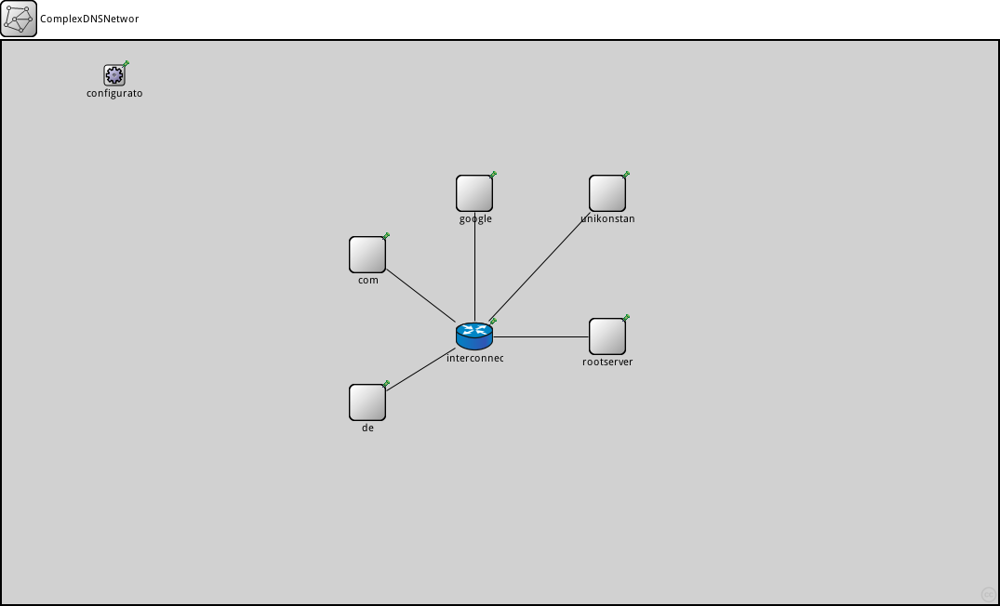
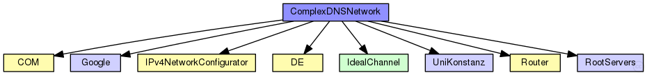
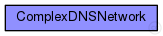

This documentation is released under the Creative Commons license
This documentation is released under the Creative Commons license(no description)
The following diagram shows usage relationships between types. Unresolved types are missing from the diagram. Click here to see the full picture.
The following diagram shows inheritance relationships for this type. Unresolved types are missing from the diagram. Click here to see the full picture.
| Name | Value | Description |
|---|---|---|
| isNetwork | ||
| display | bgb=1071,606 |
| Name | Type | Default value | Description |
|---|---|---|---|
| interconnect.status.initialStatus | string | "UP" |
TODO @signal, @statistic |
| interconnect.networkLayer.configurator.networkConfiguratorModule | string | "configurator" |
the absolute path to the IPv4NetworkConfigurator; use "" if there is no configurator |
| interconnect.networkLayer.configurator.configureRoutingTable | bool | true |
add routing entries to routing table (uses the configurator module) |
| interconnect.networkLayer.ip.routingTableModule | string | ||
| interconnect.networkLayer.ip.procDelay | double | 0s | |
| interconnect.networkLayer.ip.timeToLive | int | 32 | |
| interconnect.networkLayer.ip.multicastTimeToLive | int | 32 | |
| interconnect.networkLayer.ip.fragmentTimeout | double | 60s | |
| interconnect.networkLayer.ip.forceBroadcast | bool | false | |
| interconnect.networkLayer.arp.routingTableModule | string | ||
| interconnect.networkLayer.arp.retryTimeout | double | 1s |
number seconds ARP waits between retries to resolve an IPv4 address |
| interconnect.networkLayer.arp.retryCount | int | 3 |
number of times ARP will attempt to resolve an IPv4 address |
| interconnect.networkLayer.arp.cacheTimeout | double | 120s |
number seconds unused entries in the cache will time out |
| interconnect.networkLayer.arp.globalARP | bool | false | |
| interconnect.routingTable.routerId | string | "auto" |
for routers, the router id using IPv4 address dotted notation; specify "auto" to select the highest interface address; should be left empty ("") for hosts |
| interconnect.interfaceTable.displayAddresses | bool | true |
whether to display IP addresses on links |
| interconnect.pcapRecorder.verbose | bool | false |
whether to log packets on the module output |
| interconnect.pcapRecorder.pcapFile | string | "" |
the PCAP file to be written |
| interconnect.pcapRecorder.snaplen | int | 65535 |
maximum number of bytes to record per packet |
| interconnect.pcapRecorder.dumpBadFrames | bool | true |
enable dump of frames with hasBitError |
| interconnect.pcapRecorder.moduleNamePatterns | string | "wlan[*] eth[*] ppp[*] ext[*]" |
space-separated list of sibling module names to listen on |
| interconnect.pcapRecorder.sendingSignalNames | string | "packetSentToLower" |
space-separated list of outbound packet signals to subscribe to |
| interconnect.pcapRecorder.receivingSignalNames | string | "packetReceivedFromLower" |
space-separated list of inbound packet signals to subscribe to |
| interconnect.lo0.lo.mtu | int | 4470B | |
| interconnect.ospf.ospfConfig | xml |
xml containing the full OSPF AS configuration |
|
| interconnect.ospf.helloInterval | int | 10s |
default values for attributes of interface xml entries: |
| interconnect.ospf.pollInterval | int | 120s | |
| interconnect.ospf.routerDeadInterval | int | 40s | |
| interconnect.ospf.retransmissionInterval | int | 5s | |
| interconnect.ospf.interfaceOutputCost | int | 1 | |
| interconnect.ospf.interfaceTransmissionDelay | int | 1 | |
| interconnect.ospf.routerPriority | int | 1 | |
| interconnect.ospf.authenticationType | string | "NullType" |
SimplePasswordType|CrytographicType|NullType |
| interconnect.ospf.authenticationKey | string | "0x00" |
0xnn..nn |
| interconnect.ospf.linkCost | int | 1 | |
| interconnect.ospf.RFC1583Compatible | bool | false | |
| interconnect.ospf.areaID | string | "" | |
| interconnect.ospf.externalInterfaceOutputCost | int | 1 | |
| interconnect.ospf.externalInterfaceOutputType | string | "" |
Type1|Type2 |
| interconnect.bgp.bgpConfig | xml | ||
| interconnect.bgp.dataTransferMode | string | "bytecount" | |
| interconnect.rip.mode | string | "RIPv2" | |
| interconnect.rip.routingTableModule | string | "^.routingTable" | |
| interconnect.rip.ripConfig | xml | xml(" |
|
| interconnect.rip.updateInterval | double | 30s | |
| interconnect.rip.startupTime | double | uniform(0s,5s) | |
| interconnect.rip.triggeredUpdateDelay | double | uniform(1s,5s) | |
| interconnect.rip.routeExpiryTime | double | 180s | |
| interconnect.rip.routePurgeTime | double | 120s | |
| interconnect.rip.shutdownTime | double | 1s | |
| com.a_gtld_servers_net.status.initialStatus | string | "UP" |
TODO @signal, @statistic |
| com.a_gtld_servers_net.networkLayer.configurator.networkConfiguratorModule | string | "configurator" |
the absolute path to the IPv4NetworkConfigurator; use "" if there is no configurator |
| com.a_gtld_servers_net.networkLayer.configurator.configureRoutingTable | bool | true |
add routing entries to routing table (uses the configurator module) |
| com.a_gtld_servers_net.networkLayer.ip.routingTableModule | string | ||
| com.a_gtld_servers_net.networkLayer.ip.procDelay | double | 0s | |
| com.a_gtld_servers_net.networkLayer.ip.timeToLive | int | 32 | |
| com.a_gtld_servers_net.networkLayer.ip.multicastTimeToLive | int | 32 | |
| com.a_gtld_servers_net.networkLayer.ip.fragmentTimeout | double | 60s | |
| com.a_gtld_servers_net.networkLayer.ip.forceBroadcast | bool | false | |
| com.a_gtld_servers_net.networkLayer.arp.routingTableModule | string | ||
| com.a_gtld_servers_net.networkLayer.arp.retryTimeout | double | 1s |
number seconds ARP waits between retries to resolve an IPv4 address |
| com.a_gtld_servers_net.networkLayer.arp.retryCount | int | 3 |
number of times ARP will attempt to resolve an IPv4 address |
| com.a_gtld_servers_net.networkLayer.arp.cacheTimeout | double | 120s |
number seconds unused entries in the cache will time out |
| com.a_gtld_servers_net.networkLayer.arp.globalARP | bool | false | |
| com.a_gtld_servers_net.routingTable.routerId | string | "auto" |
for routers, the router id using IPv4 address dotted notation; specify "auto" to select the highest interface address; should be left empty ("") for hosts |
| com.a_gtld_servers_net.interfaceTable.displayAddresses | bool | true |
whether to display IP addresses on links |
| com.a_gtld_servers_net.pcapRecorder.verbose | bool | false |
whether to log packets on the module output |
| com.a_gtld_servers_net.pcapRecorder.pcapFile | string | "" |
the PCAP file to be written |
| com.a_gtld_servers_net.pcapRecorder.snaplen | int | 65535 |
maximum number of bytes to record per packet |
| com.a_gtld_servers_net.pcapRecorder.dumpBadFrames | bool | true |
enable dump of frames with hasBitError |
| com.a_gtld_servers_net.pcapRecorder.moduleNamePatterns | string | "wlan[*] eth[*] ppp[*] ext[*]" |
space-separated list of sibling module names to listen on |
| com.a_gtld_servers_net.pcapRecorder.sendingSignalNames | string | "packetSentToLower" |
space-separated list of outbound packet signals to subscribe to |
| com.a_gtld_servers_net.pcapRecorder.receivingSignalNames | string | "packetReceivedFromLower" |
space-separated list of inbound packet signals to subscribe to |
| com.a_gtld_servers_net.lo0.lo.mtu | int | 4470B | |
| com.a_gtld_servers_net.auth.recursion_available | int | 1 | |
| com.a_gtld_servers_net.auth.root_servers | string | "" | |
| com.com_bgp_out.status.initialStatus | string | "UP" |
TODO @signal, @statistic |
| com.com_bgp_out.networkLayer.configurator.networkConfiguratorModule | string | "configurator" |
the absolute path to the IPv4NetworkConfigurator; use "" if there is no configurator |
| com.com_bgp_out.networkLayer.configurator.configureRoutingTable | bool | true |
add routing entries to routing table (uses the configurator module) |
| com.com_bgp_out.networkLayer.ip.routingTableModule | string | ||
| com.com_bgp_out.networkLayer.ip.procDelay | double | 0s | |
| com.com_bgp_out.networkLayer.ip.timeToLive | int | 32 | |
| com.com_bgp_out.networkLayer.ip.multicastTimeToLive | int | 32 | |
| com.com_bgp_out.networkLayer.ip.fragmentTimeout | double | 60s | |
| com.com_bgp_out.networkLayer.ip.forceBroadcast | bool | false | |
| com.com_bgp_out.networkLayer.arp.routingTableModule | string | ||
| com.com_bgp_out.networkLayer.arp.retryTimeout | double | 1s |
number seconds ARP waits between retries to resolve an IPv4 address |
| com.com_bgp_out.networkLayer.arp.retryCount | int | 3 |
number of times ARP will attempt to resolve an IPv4 address |
| com.com_bgp_out.networkLayer.arp.cacheTimeout | double | 120s |
number seconds unused entries in the cache will time out |
| com.com_bgp_out.networkLayer.arp.globalARP | bool | false | |
| com.com_bgp_out.routingTable.routerId | string | "auto" |
for routers, the router id using IPv4 address dotted notation; specify "auto" to select the highest interface address; should be left empty ("") for hosts |
| com.com_bgp_out.interfaceTable.displayAddresses | bool | true |
whether to display IP addresses on links |
| com.com_bgp_out.pcapRecorder.verbose | bool | false |
whether to log packets on the module output |
| com.com_bgp_out.pcapRecorder.pcapFile | string | "" |
the PCAP file to be written |
| com.com_bgp_out.pcapRecorder.snaplen | int | 65535 |
maximum number of bytes to record per packet |
| com.com_bgp_out.pcapRecorder.dumpBadFrames | bool | true |
enable dump of frames with hasBitError |
| com.com_bgp_out.pcapRecorder.moduleNamePatterns | string | "wlan[*] eth[*] ppp[*] ext[*]" |
space-separated list of sibling module names to listen on |
| com.com_bgp_out.pcapRecorder.sendingSignalNames | string | "packetSentToLower" |
space-separated list of outbound packet signals to subscribe to |
| com.com_bgp_out.pcapRecorder.receivingSignalNames | string | "packetReceivedFromLower" |
space-separated list of inbound packet signals to subscribe to |
| com.com_bgp_out.lo0.lo.mtu | int | 4470B | |
| com.com_bgp_out.ospf.ospfConfig | xml |
xml containing the full OSPF AS configuration |
|
| com.com_bgp_out.ospf.helloInterval | int | 10s |
default values for attributes of interface xml entries: |
| com.com_bgp_out.ospf.pollInterval | int | 120s | |
| com.com_bgp_out.ospf.routerDeadInterval | int | 40s | |
| com.com_bgp_out.ospf.retransmissionInterval | int | 5s | |
| com.com_bgp_out.ospf.interfaceOutputCost | int | 1 | |
| com.com_bgp_out.ospf.interfaceTransmissionDelay | int | 1 | |
| com.com_bgp_out.ospf.routerPriority | int | 1 | |
| com.com_bgp_out.ospf.authenticationType | string | "NullType" |
SimplePasswordType|CrytographicType|NullType |
| com.com_bgp_out.ospf.authenticationKey | string | "0x00" |
0xnn..nn |
| com.com_bgp_out.ospf.linkCost | int | 1 | |
| com.com_bgp_out.ospf.RFC1583Compatible | bool | false | |
| com.com_bgp_out.ospf.areaID | string | "" | |
| com.com_bgp_out.ospf.externalInterfaceOutputCost | int | 1 | |
| com.com_bgp_out.ospf.externalInterfaceOutputType | string | "" |
Type1|Type2 |
| com.com_bgp_out.bgp.bgpConfig | xml | ||
| com.com_bgp_out.bgp.dataTransferMode | string | "bytecount" | |
| com.com_bgp_out.rip.mode | string | "RIPv2" | |
| com.com_bgp_out.rip.routingTableModule | string | "^.routingTable" | |
| com.com_bgp_out.rip.ripConfig | xml | xml(" |
|
| com.com_bgp_out.rip.updateInterval | double | 30s | |
| com.com_bgp_out.rip.startupTime | double | uniform(0s,5s) | |
| com.com_bgp_out.rip.triggeredUpdateDelay | double | uniform(1s,5s) | |
| com.com_bgp_out.rip.routeExpiryTime | double | 180s | |
| com.com_bgp_out.rip.routePurgeTime | double | 120s | |
| com.com_bgp_out.rip.shutdownTime | double | 1s | |
| com.com_out.status.initialStatus | string | "UP" |
TODO @signal, @statistic |
| com.com_out.networkLayer.configurator.networkConfiguratorModule | string | "configurator" |
the absolute path to the IPv4NetworkConfigurator; use "" if there is no configurator |
| com.com_out.networkLayer.configurator.configureRoutingTable | bool | true |
add routing entries to routing table (uses the configurator module) |
| com.com_out.networkLayer.ip.routingTableModule | string | ||
| com.com_out.networkLayer.ip.procDelay | double | 0s | |
| com.com_out.networkLayer.ip.timeToLive | int | 32 | |
| com.com_out.networkLayer.ip.multicastTimeToLive | int | 32 | |
| com.com_out.networkLayer.ip.fragmentTimeout | double | 60s | |
| com.com_out.networkLayer.ip.forceBroadcast | bool | false | |
| com.com_out.networkLayer.arp.routingTableModule | string | ||
| com.com_out.networkLayer.arp.retryTimeout | double | 1s |
number seconds ARP waits between retries to resolve an IPv4 address |
| com.com_out.networkLayer.arp.retryCount | int | 3 |
number of times ARP will attempt to resolve an IPv4 address |
| com.com_out.networkLayer.arp.cacheTimeout | double | 120s |
number seconds unused entries in the cache will time out |
| com.com_out.networkLayer.arp.globalARP | bool | false | |
| com.com_out.routingTable.routerId | string | "auto" |
for routers, the router id using IPv4 address dotted notation; specify "auto" to select the highest interface address; should be left empty ("") for hosts |
| com.com_out.interfaceTable.displayAddresses | bool | true |
whether to display IP addresses on links |
| com.com_out.pcapRecorder.verbose | bool | false |
whether to log packets on the module output |
| com.com_out.pcapRecorder.pcapFile | string | "" |
the PCAP file to be written |
| com.com_out.pcapRecorder.snaplen | int | 65535 |
maximum number of bytes to record per packet |
| com.com_out.pcapRecorder.dumpBadFrames | bool | true |
enable dump of frames with hasBitError |
| com.com_out.pcapRecorder.moduleNamePatterns | string | "wlan[*] eth[*] ppp[*] ext[*]" |
space-separated list of sibling module names to listen on |
| com.com_out.pcapRecorder.sendingSignalNames | string | "packetSentToLower" |
space-separated list of outbound packet signals to subscribe to |
| com.com_out.pcapRecorder.receivingSignalNames | string | "packetReceivedFromLower" |
space-separated list of inbound packet signals to subscribe to |
| com.com_out.lo0.lo.mtu | int | 4470B | |
| com.com_out.ospf.ospfConfig | xml |
xml containing the full OSPF AS configuration |
|
| com.com_out.ospf.helloInterval | int | 10s |
default values for attributes of interface xml entries: |
| com.com_out.ospf.pollInterval | int | 120s | |
| com.com_out.ospf.routerDeadInterval | int | 40s | |
| com.com_out.ospf.retransmissionInterval | int | 5s | |
| com.com_out.ospf.interfaceOutputCost | int | 1 | |
| com.com_out.ospf.interfaceTransmissionDelay | int | 1 | |
| com.com_out.ospf.routerPriority | int | 1 | |
| com.com_out.ospf.authenticationType | string | "NullType" |
SimplePasswordType|CrytographicType|NullType |
| com.com_out.ospf.authenticationKey | string | "0x00" |
0xnn..nn |
| com.com_out.ospf.linkCost | int | 1 | |
| com.com_out.ospf.RFC1583Compatible | bool | false | |
| com.com_out.ospf.areaID | string | "" | |
| com.com_out.ospf.externalInterfaceOutputCost | int | 1 | |
| com.com_out.ospf.externalInterfaceOutputType | string | "" |
Type1|Type2 |
| com.com_out.bgp.bgpConfig | xml | ||
| com.com_out.bgp.dataTransferMode | string | "bytecount" | |
| com.com_out.rip.mode | string | "RIPv2" | |
| com.com_out.rip.routingTableModule | string | "^.routingTable" | |
| com.com_out.rip.ripConfig | xml | xml(" |
|
| com.com_out.rip.updateInterval | double | 30s | |
| com.com_out.rip.startupTime | double | uniform(0s,5s) | |
| com.com_out.rip.triggeredUpdateDelay | double | uniform(1s,5s) | |
| com.com_out.rip.routeExpiryTime | double | 180s | |
| com.com_out.rip.routePurgeTime | double | 120s | |
| com.com_out.rip.shutdownTime | double | 1s | |
| de.a_nic_de.status.initialStatus | string | "UP" |
TODO @signal, @statistic |
| de.a_nic_de.networkLayer.configurator.networkConfiguratorModule | string | "configurator" |
the absolute path to the IPv4NetworkConfigurator; use "" if there is no configurator |
| de.a_nic_de.networkLayer.configurator.configureRoutingTable | bool | true |
add routing entries to routing table (uses the configurator module) |
| de.a_nic_de.networkLayer.ip.routingTableModule | string | ||
| de.a_nic_de.networkLayer.ip.procDelay | double | 0s | |
| de.a_nic_de.networkLayer.ip.timeToLive | int | 32 | |
| de.a_nic_de.networkLayer.ip.multicastTimeToLive | int | 32 | |
| de.a_nic_de.networkLayer.ip.fragmentTimeout | double | 60s | |
| de.a_nic_de.networkLayer.ip.forceBroadcast | bool | false | |
| de.a_nic_de.networkLayer.arp.routingTableModule | string | ||
| de.a_nic_de.networkLayer.arp.retryTimeout | double | 1s |
number seconds ARP waits between retries to resolve an IPv4 address |
| de.a_nic_de.networkLayer.arp.retryCount | int | 3 |
number of times ARP will attempt to resolve an IPv4 address |
| de.a_nic_de.networkLayer.arp.cacheTimeout | double | 120s |
number seconds unused entries in the cache will time out |
| de.a_nic_de.networkLayer.arp.globalARP | bool | false | |
| de.a_nic_de.routingTable.routerId | string | "auto" |
for routers, the router id using IPv4 address dotted notation; specify "auto" to select the highest interface address; should be left empty ("") for hosts |
| de.a_nic_de.interfaceTable.displayAddresses | bool | true |
whether to display IP addresses on links |
| de.a_nic_de.pcapRecorder.verbose | bool | false |
whether to log packets on the module output |
| de.a_nic_de.pcapRecorder.pcapFile | string | "" |
the PCAP file to be written |
| de.a_nic_de.pcapRecorder.snaplen | int | 65535 |
maximum number of bytes to record per packet |
| de.a_nic_de.pcapRecorder.dumpBadFrames | bool | true |
enable dump of frames with hasBitError |
| de.a_nic_de.pcapRecorder.moduleNamePatterns | string | "wlan[*] eth[*] ppp[*] ext[*]" |
space-separated list of sibling module names to listen on |
| de.a_nic_de.pcapRecorder.sendingSignalNames | string | "packetSentToLower" |
space-separated list of outbound packet signals to subscribe to |
| de.a_nic_de.pcapRecorder.receivingSignalNames | string | "packetReceivedFromLower" |
space-separated list of inbound packet signals to subscribe to |
| de.a_nic_de.lo0.lo.mtu | int | 4470B | |
| de.a_nic_de.auth.recursion_available | int | 1 | |
| de.a_nic_de.auth.root_servers | string | "" | |
| de.de_bgp_out.status.initialStatus | string | "UP" |
TODO @signal, @statistic |
| de.de_bgp_out.networkLayer.configurator.networkConfiguratorModule | string | "configurator" |
the absolute path to the IPv4NetworkConfigurator; use "" if there is no configurator |
| de.de_bgp_out.networkLayer.configurator.configureRoutingTable | bool | true |
add routing entries to routing table (uses the configurator module) |
| de.de_bgp_out.networkLayer.ip.routingTableModule | string | ||
| de.de_bgp_out.networkLayer.ip.procDelay | double | 0s | |
| de.de_bgp_out.networkLayer.ip.timeToLive | int | 32 | |
| de.de_bgp_out.networkLayer.ip.multicastTimeToLive | int | 32 | |
| de.de_bgp_out.networkLayer.ip.fragmentTimeout | double | 60s | |
| de.de_bgp_out.networkLayer.ip.forceBroadcast | bool | false | |
| de.de_bgp_out.networkLayer.arp.routingTableModule | string | ||
| de.de_bgp_out.networkLayer.arp.retryTimeout | double | 1s |
number seconds ARP waits between retries to resolve an IPv4 address |
| de.de_bgp_out.networkLayer.arp.retryCount | int | 3 |
number of times ARP will attempt to resolve an IPv4 address |
| de.de_bgp_out.networkLayer.arp.cacheTimeout | double | 120s |
number seconds unused entries in the cache will time out |
| de.de_bgp_out.networkLayer.arp.globalARP | bool | false | |
| de.de_bgp_out.routingTable.routerId | string | "auto" |
for routers, the router id using IPv4 address dotted notation; specify "auto" to select the highest interface address; should be left empty ("") for hosts |
| de.de_bgp_out.interfaceTable.displayAddresses | bool | true |
whether to display IP addresses on links |
| de.de_bgp_out.pcapRecorder.verbose | bool | false |
whether to log packets on the module output |
| de.de_bgp_out.pcapRecorder.pcapFile | string | "" |
the PCAP file to be written |
| de.de_bgp_out.pcapRecorder.snaplen | int | 65535 |
maximum number of bytes to record per packet |
| de.de_bgp_out.pcapRecorder.dumpBadFrames | bool | true |
enable dump of frames with hasBitError |
| de.de_bgp_out.pcapRecorder.moduleNamePatterns | string | "wlan[*] eth[*] ppp[*] ext[*]" |
space-separated list of sibling module names to listen on |
| de.de_bgp_out.pcapRecorder.sendingSignalNames | string | "packetSentToLower" |
space-separated list of outbound packet signals to subscribe to |
| de.de_bgp_out.pcapRecorder.receivingSignalNames | string | "packetReceivedFromLower" |
space-separated list of inbound packet signals to subscribe to |
| de.de_bgp_out.lo0.lo.mtu | int | 4470B | |
| de.de_bgp_out.ospf.ospfConfig | xml |
xml containing the full OSPF AS configuration |
|
| de.de_bgp_out.ospf.helloInterval | int | 10s |
default values for attributes of interface xml entries: |
| de.de_bgp_out.ospf.pollInterval | int | 120s | |
| de.de_bgp_out.ospf.routerDeadInterval | int | 40s | |
| de.de_bgp_out.ospf.retransmissionInterval | int | 5s | |
| de.de_bgp_out.ospf.interfaceOutputCost | int | 1 | |
| de.de_bgp_out.ospf.interfaceTransmissionDelay | int | 1 | |
| de.de_bgp_out.ospf.routerPriority | int | 1 | |
| de.de_bgp_out.ospf.authenticationType | string | "NullType" |
SimplePasswordType|CrytographicType|NullType |
| de.de_bgp_out.ospf.authenticationKey | string | "0x00" |
0xnn..nn |
| de.de_bgp_out.ospf.linkCost | int | 1 | |
| de.de_bgp_out.ospf.RFC1583Compatible | bool | false | |
| de.de_bgp_out.ospf.areaID | string | "" | |
| de.de_bgp_out.ospf.externalInterfaceOutputCost | int | 1 | |
| de.de_bgp_out.ospf.externalInterfaceOutputType | string | "" |
Type1|Type2 |
| de.de_bgp_out.bgp.bgpConfig | xml | ||
| de.de_bgp_out.bgp.dataTransferMode | string | "bytecount" | |
| de.de_bgp_out.rip.mode | string | "RIPv2" | |
| de.de_bgp_out.rip.routingTableModule | string | "^.routingTable" | |
| de.de_bgp_out.rip.ripConfig | xml | xml(" |
|
| de.de_bgp_out.rip.updateInterval | double | 30s | |
| de.de_bgp_out.rip.startupTime | double | uniform(0s,5s) | |
| de.de_bgp_out.rip.triggeredUpdateDelay | double | uniform(1s,5s) | |
| de.de_bgp_out.rip.routeExpiryTime | double | 180s | |
| de.de_bgp_out.rip.routePurgeTime | double | 120s | |
| de.de_bgp_out.rip.shutdownTime | double | 1s | |
| de.de_out.status.initialStatus | string | "UP" |
TODO @signal, @statistic |
| de.de_out.networkLayer.configurator.networkConfiguratorModule | string | "configurator" |
the absolute path to the IPv4NetworkConfigurator; use "" if there is no configurator |
| de.de_out.networkLayer.configurator.configureRoutingTable | bool | true |
add routing entries to routing table (uses the configurator module) |
| de.de_out.networkLayer.ip.routingTableModule | string | ||
| de.de_out.networkLayer.ip.procDelay | double | 0s | |
| de.de_out.networkLayer.ip.timeToLive | int | 32 | |
| de.de_out.networkLayer.ip.multicastTimeToLive | int | 32 | |
| de.de_out.networkLayer.ip.fragmentTimeout | double | 60s | |
| de.de_out.networkLayer.ip.forceBroadcast | bool | false | |
| de.de_out.networkLayer.arp.routingTableModule | string | ||
| de.de_out.networkLayer.arp.retryTimeout | double | 1s |
number seconds ARP waits between retries to resolve an IPv4 address |
| de.de_out.networkLayer.arp.retryCount | int | 3 |
number of times ARP will attempt to resolve an IPv4 address |
| de.de_out.networkLayer.arp.cacheTimeout | double | 120s |
number seconds unused entries in the cache will time out |
| de.de_out.networkLayer.arp.globalARP | bool | false | |
| de.de_out.routingTable.routerId | string | "auto" |
for routers, the router id using IPv4 address dotted notation; specify "auto" to select the highest interface address; should be left empty ("") for hosts |
| de.de_out.interfaceTable.displayAddresses | bool | true |
whether to display IP addresses on links |
| de.de_out.pcapRecorder.verbose | bool | false |
whether to log packets on the module output |
| de.de_out.pcapRecorder.pcapFile | string | "" |
the PCAP file to be written |
| de.de_out.pcapRecorder.snaplen | int | 65535 |
maximum number of bytes to record per packet |
| de.de_out.pcapRecorder.dumpBadFrames | bool | true |
enable dump of frames with hasBitError |
| de.de_out.pcapRecorder.moduleNamePatterns | string | "wlan[*] eth[*] ppp[*] ext[*]" |
space-separated list of sibling module names to listen on |
| de.de_out.pcapRecorder.sendingSignalNames | string | "packetSentToLower" |
space-separated list of outbound packet signals to subscribe to |
| de.de_out.pcapRecorder.receivingSignalNames | string | "packetReceivedFromLower" |
space-separated list of inbound packet signals to subscribe to |
| de.de_out.lo0.lo.mtu | int | 4470B | |
| de.de_out.ospf.ospfConfig | xml |
xml containing the full OSPF AS configuration |
|
| de.de_out.ospf.helloInterval | int | 10s |
default values for attributes of interface xml entries: |
| de.de_out.ospf.pollInterval | int | 120s | |
| de.de_out.ospf.routerDeadInterval | int | 40s | |
| de.de_out.ospf.retransmissionInterval | int | 5s | |
| de.de_out.ospf.interfaceOutputCost | int | 1 | |
| de.de_out.ospf.interfaceTransmissionDelay | int | 1 | |
| de.de_out.ospf.routerPriority | int | 1 | |
| de.de_out.ospf.authenticationType | string | "NullType" |
SimplePasswordType|CrytographicType|NullType |
| de.de_out.ospf.authenticationKey | string | "0x00" |
0xnn..nn |
| de.de_out.ospf.linkCost | int | 1 | |
| de.de_out.ospf.RFC1583Compatible | bool | false | |
| de.de_out.ospf.areaID | string | "" | |
| de.de_out.ospf.externalInterfaceOutputCost | int | 1 | |
| de.de_out.ospf.externalInterfaceOutputType | string | "" |
Type1|Type2 |
| de.de_out.bgp.bgpConfig | xml | ||
| de.de_out.bgp.dataTransferMode | string | "bytecount" | |
| de.de_out.rip.mode | string | "RIPv2" | |
| de.de_out.rip.routingTableModule | string | "^.routingTable" | |
| de.de_out.rip.ripConfig | xml | xml(" |
|
| de.de_out.rip.updateInterval | double | 30s | |
| de.de_out.rip.startupTime | double | uniform(0s,5s) | |
| de.de_out.rip.triggeredUpdateDelay | double | uniform(1s,5s) | |
| de.de_out.rip.routeExpiryTime | double | 180s | |
| de.de_out.rip.routePurgeTime | double | 120s | |
| de.de_out.rip.shutdownTime | double | 1s | |
| rootservers.i_root.status.initialStatus | string | "UP" |
TODO @signal, @statistic |
| rootservers.i_root.networkLayer.configurator.networkConfiguratorModule | string | "configurator" |
the absolute path to the IPv4NetworkConfigurator; use "" if there is no configurator |
| rootservers.i_root.networkLayer.configurator.configureRoutingTable | bool | true |
add routing entries to routing table (uses the configurator module) |
| rootservers.i_root.networkLayer.ip.routingTableModule | string | ||
| rootservers.i_root.networkLayer.ip.procDelay | double | 0s | |
| rootservers.i_root.networkLayer.ip.timeToLive | int | 32 | |
| rootservers.i_root.networkLayer.ip.multicastTimeToLive | int | 32 | |
| rootservers.i_root.networkLayer.ip.fragmentTimeout | double | 60s | |
| rootservers.i_root.networkLayer.ip.forceBroadcast | bool | false | |
| rootservers.i_root.networkLayer.arp.routingTableModule | string | ||
| rootservers.i_root.networkLayer.arp.retryTimeout | double | 1s |
number seconds ARP waits between retries to resolve an IPv4 address |
| rootservers.i_root.networkLayer.arp.retryCount | int | 3 |
number of times ARP will attempt to resolve an IPv4 address |
| rootservers.i_root.networkLayer.arp.cacheTimeout | double | 120s |
number seconds unused entries in the cache will time out |
| rootservers.i_root.networkLayer.arp.globalARP | bool | false | |
| rootservers.i_root.routingTable.routerId | string | "auto" |
for routers, the router id using IPv4 address dotted notation; specify "auto" to select the highest interface address; should be left empty ("") for hosts |
| rootservers.i_root.interfaceTable.displayAddresses | bool | true |
whether to display IP addresses on links |
| rootservers.i_root.pcapRecorder.verbose | bool | false |
whether to log packets on the module output |
| rootservers.i_root.pcapRecorder.pcapFile | string | "" |
the PCAP file to be written |
| rootservers.i_root.pcapRecorder.snaplen | int | 65535 |
maximum number of bytes to record per packet |
| rootservers.i_root.pcapRecorder.dumpBadFrames | bool | true |
enable dump of frames with hasBitError |
| rootservers.i_root.pcapRecorder.moduleNamePatterns | string | "wlan[*] eth[*] ppp[*] ext[*]" |
space-separated list of sibling module names to listen on |
| rootservers.i_root.pcapRecorder.sendingSignalNames | string | "packetSentToLower" |
space-separated list of outbound packet signals to subscribe to |
| rootservers.i_root.pcapRecorder.receivingSignalNames | string | "packetReceivedFromLower" |
space-separated list of inbound packet signals to subscribe to |
| rootservers.i_root.lo0.lo.mtu | int | 4470B | |
| rootservers.i_root.auth.recursion_available | int | 1 | |
| rootservers.i_root.auth.root_servers | string | "" | |
| rootservers.b_root.status.initialStatus | string | "UP" |
TODO @signal, @statistic |
| rootservers.b_root.networkLayer.configurator.networkConfiguratorModule | string | "configurator" |
the absolute path to the IPv4NetworkConfigurator; use "" if there is no configurator |
| rootservers.b_root.networkLayer.configurator.configureRoutingTable | bool | true |
add routing entries to routing table (uses the configurator module) |
| rootservers.b_root.networkLayer.ip.routingTableModule | string | ||
| rootservers.b_root.networkLayer.ip.procDelay | double | 0s | |
| rootservers.b_root.networkLayer.ip.timeToLive | int | 32 | |
| rootservers.b_root.networkLayer.ip.multicastTimeToLive | int | 32 | |
| rootservers.b_root.networkLayer.ip.fragmentTimeout | double | 60s | |
| rootservers.b_root.networkLayer.ip.forceBroadcast | bool | false | |
| rootservers.b_root.networkLayer.arp.routingTableModule | string | ||
| rootservers.b_root.networkLayer.arp.retryTimeout | double | 1s |
number seconds ARP waits between retries to resolve an IPv4 address |
| rootservers.b_root.networkLayer.arp.retryCount | int | 3 |
number of times ARP will attempt to resolve an IPv4 address |
| rootservers.b_root.networkLayer.arp.cacheTimeout | double | 120s |
number seconds unused entries in the cache will time out |
| rootservers.b_root.networkLayer.arp.globalARP | bool | false | |
| rootservers.b_root.routingTable.routerId | string | "auto" |
for routers, the router id using IPv4 address dotted notation; specify "auto" to select the highest interface address; should be left empty ("") for hosts |
| rootservers.b_root.interfaceTable.displayAddresses | bool | true |
whether to display IP addresses on links |
| rootservers.b_root.pcapRecorder.verbose | bool | false |
whether to log packets on the module output |
| rootservers.b_root.pcapRecorder.pcapFile | string | "" |
the PCAP file to be written |
| rootservers.b_root.pcapRecorder.snaplen | int | 65535 |
maximum number of bytes to record per packet |
| rootservers.b_root.pcapRecorder.dumpBadFrames | bool | true |
enable dump of frames with hasBitError |
| rootservers.b_root.pcapRecorder.moduleNamePatterns | string | "wlan[*] eth[*] ppp[*] ext[*]" |
space-separated list of sibling module names to listen on |
| rootservers.b_root.pcapRecorder.sendingSignalNames | string | "packetSentToLower" |
space-separated list of outbound packet signals to subscribe to |
| rootservers.b_root.pcapRecorder.receivingSignalNames | string | "packetReceivedFromLower" |
space-separated list of inbound packet signals to subscribe to |
| rootservers.b_root.lo0.lo.mtu | int | 4470B | |
| rootservers.b_root.auth.recursion_available | int | 1 | |
| rootservers.b_root.auth.root_servers | string | "" | |
| rootservers.root_server_bgp.status.initialStatus | string | "UP" |
TODO @signal, @statistic |
| rootservers.root_server_bgp.networkLayer.configurator.networkConfiguratorModule | string | "configurator" |
the absolute path to the IPv4NetworkConfigurator; use "" if there is no configurator |
| rootservers.root_server_bgp.networkLayer.configurator.configureRoutingTable | bool | true |
add routing entries to routing table (uses the configurator module) |
| rootservers.root_server_bgp.networkLayer.ip.routingTableModule | string | ||
| rootservers.root_server_bgp.networkLayer.ip.procDelay | double | 0s | |
| rootservers.root_server_bgp.networkLayer.ip.timeToLive | int | 32 | |
| rootservers.root_server_bgp.networkLayer.ip.multicastTimeToLive | int | 32 | |
| rootservers.root_server_bgp.networkLayer.ip.fragmentTimeout | double | 60s | |
| rootservers.root_server_bgp.networkLayer.ip.forceBroadcast | bool | false | |
| rootservers.root_server_bgp.networkLayer.arp.routingTableModule | string | ||
| rootservers.root_server_bgp.networkLayer.arp.retryTimeout | double | 1s |
number seconds ARP waits between retries to resolve an IPv4 address |
| rootservers.root_server_bgp.networkLayer.arp.retryCount | int | 3 |
number of times ARP will attempt to resolve an IPv4 address |
| rootservers.root_server_bgp.networkLayer.arp.cacheTimeout | double | 120s |
number seconds unused entries in the cache will time out |
| rootservers.root_server_bgp.networkLayer.arp.globalARP | bool | false | |
| rootservers.root_server_bgp.routingTable.routerId | string | "auto" |
for routers, the router id using IPv4 address dotted notation; specify "auto" to select the highest interface address; should be left empty ("") for hosts |
| rootservers.root_server_bgp.interfaceTable.displayAddresses | bool | true |
whether to display IP addresses on links |
| rootservers.root_server_bgp.pcapRecorder.verbose | bool | false |
whether to log packets on the module output |
| rootservers.root_server_bgp.pcapRecorder.pcapFile | string | "" |
the PCAP file to be written |
| rootservers.root_server_bgp.pcapRecorder.snaplen | int | 65535 |
maximum number of bytes to record per packet |
| rootservers.root_server_bgp.pcapRecorder.dumpBadFrames | bool | true |
enable dump of frames with hasBitError |
| rootservers.root_server_bgp.pcapRecorder.moduleNamePatterns | string | "wlan[*] eth[*] ppp[*] ext[*]" |
space-separated list of sibling module names to listen on |
| rootservers.root_server_bgp.pcapRecorder.sendingSignalNames | string | "packetSentToLower" |
space-separated list of outbound packet signals to subscribe to |
| rootservers.root_server_bgp.pcapRecorder.receivingSignalNames | string | "packetReceivedFromLower" |
space-separated list of inbound packet signals to subscribe to |
| rootservers.root_server_bgp.lo0.lo.mtu | int | 4470B | |
| rootservers.root_server_bgp.ospf.ospfConfig | xml |
xml containing the full OSPF AS configuration |
|
| rootservers.root_server_bgp.ospf.helloInterval | int | 10s |
default values for attributes of interface xml entries: |
| rootservers.root_server_bgp.ospf.pollInterval | int | 120s | |
| rootservers.root_server_bgp.ospf.routerDeadInterval | int | 40s | |
| rootservers.root_server_bgp.ospf.retransmissionInterval | int | 5s | |
| rootservers.root_server_bgp.ospf.interfaceOutputCost | int | 1 | |
| rootservers.root_server_bgp.ospf.interfaceTransmissionDelay | int | 1 | |
| rootservers.root_server_bgp.ospf.routerPriority | int | 1 | |
| rootservers.root_server_bgp.ospf.authenticationType | string | "NullType" |
SimplePasswordType|CrytographicType|NullType |
| rootservers.root_server_bgp.ospf.authenticationKey | string | "0x00" |
0xnn..nn |
| rootservers.root_server_bgp.ospf.linkCost | int | 1 | |
| rootservers.root_server_bgp.ospf.RFC1583Compatible | bool | false | |
| rootservers.root_server_bgp.ospf.areaID | string | "" | |
| rootservers.root_server_bgp.ospf.externalInterfaceOutputCost | int | 1 | |
| rootservers.root_server_bgp.ospf.externalInterfaceOutputType | string | "" |
Type1|Type2 |
| rootservers.root_server_bgp.bgp.bgpConfig | xml | ||
| rootservers.root_server_bgp.bgp.dataTransferMode | string | "bytecount" | |
| rootservers.root_server_bgp.rip.mode | string | "RIPv2" | |
| rootservers.root_server_bgp.rip.routingTableModule | string | "^.routingTable" | |
| rootservers.root_server_bgp.rip.ripConfig | xml | xml(" |
|
| rootservers.root_server_bgp.rip.updateInterval | double | 30s | |
| rootservers.root_server_bgp.rip.startupTime | double | uniform(0s,5s) | |
| rootservers.root_server_bgp.rip.triggeredUpdateDelay | double | uniform(1s,5s) | |
| rootservers.root_server_bgp.rip.routeExpiryTime | double | 180s | |
| rootservers.root_server_bgp.rip.routePurgeTime | double | 120s | |
| rootservers.root_server_bgp.rip.shutdownTime | double | 1s | |
| rootservers.i_root_router.status.initialStatus | string | "UP" |
TODO @signal, @statistic |
| rootservers.i_root_router.networkLayer.configurator.networkConfiguratorModule | string | "configurator" |
the absolute path to the IPv4NetworkConfigurator; use "" if there is no configurator |
| rootservers.i_root_router.networkLayer.configurator.configureRoutingTable | bool | true |
add routing entries to routing table (uses the configurator module) |
| rootservers.i_root_router.networkLayer.ip.routingTableModule | string | ||
| rootservers.i_root_router.networkLayer.ip.procDelay | double | 0s | |
| rootservers.i_root_router.networkLayer.ip.timeToLive | int | 32 | |
| rootservers.i_root_router.networkLayer.ip.multicastTimeToLive | int | 32 | |
| rootservers.i_root_router.networkLayer.ip.fragmentTimeout | double | 60s | |
| rootservers.i_root_router.networkLayer.ip.forceBroadcast | bool | false | |
| rootservers.i_root_router.networkLayer.arp.routingTableModule | string | ||
| rootservers.i_root_router.networkLayer.arp.retryTimeout | double | 1s |
number seconds ARP waits between retries to resolve an IPv4 address |
| rootservers.i_root_router.networkLayer.arp.retryCount | int | 3 |
number of times ARP will attempt to resolve an IPv4 address |
| rootservers.i_root_router.networkLayer.arp.cacheTimeout | double | 120s |
number seconds unused entries in the cache will time out |
| rootservers.i_root_router.networkLayer.arp.globalARP | bool | false | |
| rootservers.i_root_router.routingTable.routerId | string | "auto" |
for routers, the router id using IPv4 address dotted notation; specify "auto" to select the highest interface address; should be left empty ("") for hosts |
| rootservers.i_root_router.interfaceTable.displayAddresses | bool | true |
whether to display IP addresses on links |
| rootservers.i_root_router.pcapRecorder.verbose | bool | false |
whether to log packets on the module output |
| rootservers.i_root_router.pcapRecorder.pcapFile | string | "" |
the PCAP file to be written |
| rootservers.i_root_router.pcapRecorder.snaplen | int | 65535 |
maximum number of bytes to record per packet |
| rootservers.i_root_router.pcapRecorder.dumpBadFrames | bool | true |
enable dump of frames with hasBitError |
| rootservers.i_root_router.pcapRecorder.moduleNamePatterns | string | "wlan[*] eth[*] ppp[*] ext[*]" |
space-separated list of sibling module names to listen on |
| rootservers.i_root_router.pcapRecorder.sendingSignalNames | string | "packetSentToLower" |
space-separated list of outbound packet signals to subscribe to |
| rootservers.i_root_router.pcapRecorder.receivingSignalNames | string | "packetReceivedFromLower" |
space-separated list of inbound packet signals to subscribe to |
| rootservers.i_root_router.lo0.lo.mtu | int | 4470B | |
| rootservers.i_root_router.ospf.ospfConfig | xml |
xml containing the full OSPF AS configuration |
|
| rootservers.i_root_router.ospf.helloInterval | int | 10s |
default values for attributes of interface xml entries: |
| rootservers.i_root_router.ospf.pollInterval | int | 120s | |
| rootservers.i_root_router.ospf.routerDeadInterval | int | 40s | |
| rootservers.i_root_router.ospf.retransmissionInterval | int | 5s | |
| rootservers.i_root_router.ospf.interfaceOutputCost | int | 1 | |
| rootservers.i_root_router.ospf.interfaceTransmissionDelay | int | 1 | |
| rootservers.i_root_router.ospf.routerPriority | int | 1 | |
| rootservers.i_root_router.ospf.authenticationType | string | "NullType" |
SimplePasswordType|CrytographicType|NullType |
| rootservers.i_root_router.ospf.authenticationKey | string | "0x00" |
0xnn..nn |
| rootservers.i_root_router.ospf.linkCost | int | 1 | |
| rootservers.i_root_router.ospf.RFC1583Compatible | bool | false | |
| rootservers.i_root_router.ospf.areaID | string | "" | |
| rootservers.i_root_router.ospf.externalInterfaceOutputCost | int | 1 | |
| rootservers.i_root_router.ospf.externalInterfaceOutputType | string | "" |
Type1|Type2 |
| rootservers.i_root_router.bgp.bgpConfig | xml | ||
| rootservers.i_root_router.bgp.dataTransferMode | string | "bytecount" | |
| rootservers.i_root_router.rip.mode | string | "RIPv2" | |
| rootservers.i_root_router.rip.routingTableModule | string | "^.routingTable" | |
| rootservers.i_root_router.rip.ripConfig | xml | xml(" |
|
| rootservers.i_root_router.rip.updateInterval | double | 30s | |
| rootservers.i_root_router.rip.startupTime | double | uniform(0s,5s) | |
| rootservers.i_root_router.rip.triggeredUpdateDelay | double | uniform(1s,5s) | |
| rootservers.i_root_router.rip.routeExpiryTime | double | 180s | |
| rootservers.i_root_router.rip.routePurgeTime | double | 120s | |
| rootservers.i_root_router.rip.shutdownTime | double | 1s | |
| rootservers.b_root_router.status.initialStatus | string | "UP" |
TODO @signal, @statistic |
| rootservers.b_root_router.networkLayer.configurator.networkConfiguratorModule | string | "configurator" |
the absolute path to the IPv4NetworkConfigurator; use "" if there is no configurator |
| rootservers.b_root_router.networkLayer.configurator.configureRoutingTable | bool | true |
add routing entries to routing table (uses the configurator module) |
| rootservers.b_root_router.networkLayer.ip.routingTableModule | string | ||
| rootservers.b_root_router.networkLayer.ip.procDelay | double | 0s | |
| rootservers.b_root_router.networkLayer.ip.timeToLive | int | 32 | |
| rootservers.b_root_router.networkLayer.ip.multicastTimeToLive | int | 32 | |
| rootservers.b_root_router.networkLayer.ip.fragmentTimeout | double | 60s | |
| rootservers.b_root_router.networkLayer.ip.forceBroadcast | bool | false | |
| rootservers.b_root_router.networkLayer.arp.routingTableModule | string | ||
| rootservers.b_root_router.networkLayer.arp.retryTimeout | double | 1s |
number seconds ARP waits between retries to resolve an IPv4 address |
| rootservers.b_root_router.networkLayer.arp.retryCount | int | 3 |
number of times ARP will attempt to resolve an IPv4 address |
| rootservers.b_root_router.networkLayer.arp.cacheTimeout | double | 120s |
number seconds unused entries in the cache will time out |
| rootservers.b_root_router.networkLayer.arp.globalARP | bool | false | |
| rootservers.b_root_router.routingTable.routerId | string | "auto" |
for routers, the router id using IPv4 address dotted notation; specify "auto" to select the highest interface address; should be left empty ("") for hosts |
| rootservers.b_root_router.interfaceTable.displayAddresses | bool | true |
whether to display IP addresses on links |
| rootservers.b_root_router.pcapRecorder.verbose | bool | false |
whether to log packets on the module output |
| rootservers.b_root_router.pcapRecorder.pcapFile | string | "" |
the PCAP file to be written |
| rootservers.b_root_router.pcapRecorder.snaplen | int | 65535 |
maximum number of bytes to record per packet |
| rootservers.b_root_router.pcapRecorder.dumpBadFrames | bool | true |
enable dump of frames with hasBitError |
| rootservers.b_root_router.pcapRecorder.moduleNamePatterns | string | "wlan[*] eth[*] ppp[*] ext[*]" |
space-separated list of sibling module names to listen on |
| rootservers.b_root_router.pcapRecorder.sendingSignalNames | string | "packetSentToLower" |
space-separated list of outbound packet signals to subscribe to |
| rootservers.b_root_router.pcapRecorder.receivingSignalNames | string | "packetReceivedFromLower" |
space-separated list of inbound packet signals to subscribe to |
| rootservers.b_root_router.lo0.lo.mtu | int | 4470B | |
| rootservers.b_root_router.ospf.ospfConfig | xml |
xml containing the full OSPF AS configuration |
|
| rootservers.b_root_router.ospf.helloInterval | int | 10s |
default values for attributes of interface xml entries: |
| rootservers.b_root_router.ospf.pollInterval | int | 120s | |
| rootservers.b_root_router.ospf.routerDeadInterval | int | 40s | |
| rootservers.b_root_router.ospf.retransmissionInterval | int | 5s | |
| rootservers.b_root_router.ospf.interfaceOutputCost | int | 1 | |
| rootservers.b_root_router.ospf.interfaceTransmissionDelay | int | 1 | |
| rootservers.b_root_router.ospf.routerPriority | int | 1 | |
| rootservers.b_root_router.ospf.authenticationType | string | "NullType" |
SimplePasswordType|CrytographicType|NullType |
| rootservers.b_root_router.ospf.authenticationKey | string | "0x00" |
0xnn..nn |
| rootservers.b_root_router.ospf.linkCost | int | 1 | |
| rootservers.b_root_router.ospf.RFC1583Compatible | bool | false | |
| rootservers.b_root_router.ospf.areaID | string | "" | |
| rootservers.b_root_router.ospf.externalInterfaceOutputCost | int | 1 | |
| rootservers.b_root_router.ospf.externalInterfaceOutputType | string | "" |
Type1|Type2 |
| rootservers.b_root_router.bgp.bgpConfig | xml | ||
| rootservers.b_root_router.bgp.dataTransferMode | string | "bytecount" | |
| rootservers.b_root_router.rip.mode | string | "RIPv2" | |
| rootservers.b_root_router.rip.routingTableModule | string | "^.routingTable" | |
| rootservers.b_root_router.rip.ripConfig | xml | xml(" |
|
| rootservers.b_root_router.rip.updateInterval | double | 30s | |
| rootservers.b_root_router.rip.startupTime | double | uniform(0s,5s) | |
| rootservers.b_root_router.rip.triggeredUpdateDelay | double | uniform(1s,5s) | |
| rootservers.b_root_router.rip.routeExpiryTime | double | 180s | |
| rootservers.b_root_router.rip.routePurgeTime | double | 120s | |
| rootservers.b_root_router.rip.shutdownTime | double | 1s | |
| unikonstanz.imap.status.initialStatus | string | "UP" |
TODO @signal, @statistic |
| unikonstanz.imap.networkLayer.configurator.networkConfiguratorModule | string | "configurator" |
the absolute path to the IPv4NetworkConfigurator; use "" if there is no configurator |
| unikonstanz.imap.networkLayer.configurator.configureRoutingTable | bool | true |
add routing entries to routing table (uses the configurator module) |
| unikonstanz.imap.networkLayer.ip.routingTableModule | string | ||
| unikonstanz.imap.networkLayer.ip.procDelay | double | 0s | |
| unikonstanz.imap.networkLayer.ip.timeToLive | int | 32 | |
| unikonstanz.imap.networkLayer.ip.multicastTimeToLive | int | 32 | |
| unikonstanz.imap.networkLayer.ip.fragmentTimeout | double | 60s | |
| unikonstanz.imap.networkLayer.ip.forceBroadcast | bool | false | |
| unikonstanz.imap.networkLayer.arp.routingTableModule | string | ||
| unikonstanz.imap.networkLayer.arp.retryTimeout | double | 1s |
number seconds ARP waits between retries to resolve an IPv4 address |
| unikonstanz.imap.networkLayer.arp.retryCount | int | 3 |
number of times ARP will attempt to resolve an IPv4 address |
| unikonstanz.imap.networkLayer.arp.cacheTimeout | double | 120s |
number seconds unused entries in the cache will time out |
| unikonstanz.imap.networkLayer.arp.globalARP | bool | false | |
| unikonstanz.imap.routingTable.routerId | string | "auto" |
for routers, the router id using IPv4 address dotted notation; specify "auto" to select the highest interface address; should be left empty ("") for hosts |
| unikonstanz.imap.interfaceTable.displayAddresses | bool | true |
whether to display IP addresses on links |
| unikonstanz.imap.pcapRecorder.verbose | bool | false |
whether to log packets on the module output |
| unikonstanz.imap.pcapRecorder.pcapFile | string | "" |
the PCAP file to be written |
| unikonstanz.imap.pcapRecorder.snaplen | int | 65535 |
maximum number of bytes to record per packet |
| unikonstanz.imap.pcapRecorder.dumpBadFrames | bool | true |
enable dump of frames with hasBitError |
| unikonstanz.imap.pcapRecorder.moduleNamePatterns | string | "wlan[*] eth[*] ppp[*] ext[*]" |
space-separated list of sibling module names to listen on |
| unikonstanz.imap.pcapRecorder.sendingSignalNames | string | "packetSentToLower" |
space-separated list of outbound packet signals to subscribe to |
| unikonstanz.imap.pcapRecorder.receivingSignalNames | string | "packetReceivedFromLower" |
space-separated list of inbound packet signals to subscribe to |
| unikonstanz.imap.lo0.lo.mtu | int | 4470B | |
| unikonstanz.proxy_neu_rz.status.initialStatus | string | "UP" |
TODO @signal, @statistic |
| unikonstanz.proxy_neu_rz.networkLayer.configurator.networkConfiguratorModule | string | "configurator" |
the absolute path to the IPv4NetworkConfigurator; use "" if there is no configurator |
| unikonstanz.proxy_neu_rz.networkLayer.configurator.configureRoutingTable | bool | true |
add routing entries to routing table (uses the configurator module) |
| unikonstanz.proxy_neu_rz.networkLayer.ip.routingTableModule | string | ||
| unikonstanz.proxy_neu_rz.networkLayer.ip.procDelay | double | 0s | |
| unikonstanz.proxy_neu_rz.networkLayer.ip.timeToLive | int | 32 | |
| unikonstanz.proxy_neu_rz.networkLayer.ip.multicastTimeToLive | int | 32 | |
| unikonstanz.proxy_neu_rz.networkLayer.ip.fragmentTimeout | double | 60s | |
| unikonstanz.proxy_neu_rz.networkLayer.ip.forceBroadcast | bool | false | |
| unikonstanz.proxy_neu_rz.networkLayer.arp.routingTableModule | string | ||
| unikonstanz.proxy_neu_rz.networkLayer.arp.retryTimeout | double | 1s |
number seconds ARP waits between retries to resolve an IPv4 address |
| unikonstanz.proxy_neu_rz.networkLayer.arp.retryCount | int | 3 |
number of times ARP will attempt to resolve an IPv4 address |
| unikonstanz.proxy_neu_rz.networkLayer.arp.cacheTimeout | double | 120s |
number seconds unused entries in the cache will time out |
| unikonstanz.proxy_neu_rz.networkLayer.arp.globalARP | bool | false | |
| unikonstanz.proxy_neu_rz.routingTable.routerId | string | "auto" |
for routers, the router id using IPv4 address dotted notation; specify "auto" to select the highest interface address; should be left empty ("") for hosts |
| unikonstanz.proxy_neu_rz.interfaceTable.displayAddresses | bool | true |
whether to display IP addresses on links |
| unikonstanz.proxy_neu_rz.pcapRecorder.verbose | bool | false |
whether to log packets on the module output |
| unikonstanz.proxy_neu_rz.pcapRecorder.pcapFile | string | "" |
the PCAP file to be written |
| unikonstanz.proxy_neu_rz.pcapRecorder.snaplen | int | 65535 |
maximum number of bytes to record per packet |
| unikonstanz.proxy_neu_rz.pcapRecorder.dumpBadFrames | bool | true |
enable dump of frames with hasBitError |
| unikonstanz.proxy_neu_rz.pcapRecorder.moduleNamePatterns | string | "wlan[*] eth[*] ppp[*] ext[*]" |
space-separated list of sibling module names to listen on |
| unikonstanz.proxy_neu_rz.pcapRecorder.sendingSignalNames | string | "packetSentToLower" |
space-separated list of outbound packet signals to subscribe to |
| unikonstanz.proxy_neu_rz.pcapRecorder.receivingSignalNames | string | "packetReceivedFromLower" |
space-separated list of inbound packet signals to subscribe to |
| unikonstanz.proxy_neu_rz.lo0.lo.mtu | int | 4470B | |
| unikonstanz.cms.status.initialStatus | string | "UP" |
TODO @signal, @statistic |
| unikonstanz.cms.networkLayer.configurator.networkConfiguratorModule | string | "configurator" |
the absolute path to the IPv4NetworkConfigurator; use "" if there is no configurator |
| unikonstanz.cms.networkLayer.configurator.configureRoutingTable | bool | true |
add routing entries to routing table (uses the configurator module) |
| unikonstanz.cms.networkLayer.ip.routingTableModule | string | ||
| unikonstanz.cms.networkLayer.ip.procDelay | double | 0s | |
| unikonstanz.cms.networkLayer.ip.timeToLive | int | 32 | |
| unikonstanz.cms.networkLayer.ip.multicastTimeToLive | int | 32 | |
| unikonstanz.cms.networkLayer.ip.fragmentTimeout | double | 60s | |
| unikonstanz.cms.networkLayer.ip.forceBroadcast | bool | false | |
| unikonstanz.cms.networkLayer.arp.routingTableModule | string | ||
| unikonstanz.cms.networkLayer.arp.retryTimeout | double | 1s |
number seconds ARP waits between retries to resolve an IPv4 address |
| unikonstanz.cms.networkLayer.arp.retryCount | int | 3 |
number of times ARP will attempt to resolve an IPv4 address |
| unikonstanz.cms.networkLayer.arp.cacheTimeout | double | 120s |
number seconds unused entries in the cache will time out |
| unikonstanz.cms.networkLayer.arp.globalARP | bool | false | |
| unikonstanz.cms.routingTable.routerId | string | "auto" |
for routers, the router id using IPv4 address dotted notation; specify "auto" to select the highest interface address; should be left empty ("") for hosts |
| unikonstanz.cms.interfaceTable.displayAddresses | bool | true |
whether to display IP addresses on links |
| unikonstanz.cms.pcapRecorder.verbose | bool | false |
whether to log packets on the module output |
| unikonstanz.cms.pcapRecorder.pcapFile | string | "" |
the PCAP file to be written |
| unikonstanz.cms.pcapRecorder.snaplen | int | 65535 |
maximum number of bytes to record per packet |
| unikonstanz.cms.pcapRecorder.dumpBadFrames | bool | true |
enable dump of frames with hasBitError |
| unikonstanz.cms.pcapRecorder.moduleNamePatterns | string | "wlan[*] eth[*] ppp[*] ext[*]" |
space-separated list of sibling module names to listen on |
| unikonstanz.cms.pcapRecorder.sendingSignalNames | string | "packetSentToLower" |
space-separated list of outbound packet signals to subscribe to |
| unikonstanz.cms.pcapRecorder.receivingSignalNames | string | "packetReceivedFromLower" |
space-separated list of inbound packet signals to subscribe to |
| unikonstanz.cms.lo0.lo.mtu | int | 4470B | |
| unikonstanz.rz.status.initialStatus | string | "UP" |
TODO @signal, @statistic |
| unikonstanz.rz.networkLayer.configurator.networkConfiguratorModule | string | "configurator" |
the absolute path to the IPv4NetworkConfigurator; use "" if there is no configurator |
| unikonstanz.rz.networkLayer.configurator.configureRoutingTable | bool | true |
add routing entries to routing table (uses the configurator module) |
| unikonstanz.rz.networkLayer.ip.routingTableModule | string | ||
| unikonstanz.rz.networkLayer.ip.procDelay | double | 0s | |
| unikonstanz.rz.networkLayer.ip.timeToLive | int | 32 | |
| unikonstanz.rz.networkLayer.ip.multicastTimeToLive | int | 32 | |
| unikonstanz.rz.networkLayer.ip.fragmentTimeout | double | 60s | |
| unikonstanz.rz.networkLayer.ip.forceBroadcast | bool | false | |
| unikonstanz.rz.networkLayer.arp.routingTableModule | string | ||
| unikonstanz.rz.networkLayer.arp.retryTimeout | double | 1s |
number seconds ARP waits between retries to resolve an IPv4 address |
| unikonstanz.rz.networkLayer.arp.retryCount | int | 3 |
number of times ARP will attempt to resolve an IPv4 address |
| unikonstanz.rz.networkLayer.arp.cacheTimeout | double | 120s |
number seconds unused entries in the cache will time out |
| unikonstanz.rz.networkLayer.arp.globalARP | bool | false | |
| unikonstanz.rz.routingTable.routerId | string | "auto" |
for routers, the router id using IPv4 address dotted notation; specify "auto" to select the highest interface address; should be left empty ("") for hosts |
| unikonstanz.rz.interfaceTable.displayAddresses | bool | true |
whether to display IP addresses on links |
| unikonstanz.rz.pcapRecorder.verbose | bool | false |
whether to log packets on the module output |
| unikonstanz.rz.pcapRecorder.pcapFile | string | "" |
the PCAP file to be written |
| unikonstanz.rz.pcapRecorder.snaplen | int | 65535 |
maximum number of bytes to record per packet |
| unikonstanz.rz.pcapRecorder.dumpBadFrames | bool | true |
enable dump of frames with hasBitError |
| unikonstanz.rz.pcapRecorder.moduleNamePatterns | string | "wlan[*] eth[*] ppp[*] ext[*]" |
space-separated list of sibling module names to listen on |
| unikonstanz.rz.pcapRecorder.sendingSignalNames | string | "packetSentToLower" |
space-separated list of outbound packet signals to subscribe to |
| unikonstanz.rz.pcapRecorder.receivingSignalNames | string | "packetReceivedFromLower" |
space-separated list of inbound packet signals to subscribe to |
| unikonstanz.rz.lo0.lo.mtu | int | 4470B | |
| unikonstanz.rz.ospf.ospfConfig | xml |
xml containing the full OSPF AS configuration |
|
| unikonstanz.rz.ospf.helloInterval | int | 10s |
default values for attributes of interface xml entries: |
| unikonstanz.rz.ospf.pollInterval | int | 120s | |
| unikonstanz.rz.ospf.routerDeadInterval | int | 40s | |
| unikonstanz.rz.ospf.retransmissionInterval | int | 5s | |
| unikonstanz.rz.ospf.interfaceOutputCost | int | 1 | |
| unikonstanz.rz.ospf.interfaceTransmissionDelay | int | 1 | |
| unikonstanz.rz.ospf.routerPriority | int | 1 | |
| unikonstanz.rz.ospf.authenticationType | string | "NullType" |
SimplePasswordType|CrytographicType|NullType |
| unikonstanz.rz.ospf.authenticationKey | string | "0x00" |
0xnn..nn |
| unikonstanz.rz.ospf.linkCost | int | 1 | |
| unikonstanz.rz.ospf.RFC1583Compatible | bool | false | |
| unikonstanz.rz.ospf.areaID | string | "" | |
| unikonstanz.rz.ospf.externalInterfaceOutputCost | int | 1 | |
| unikonstanz.rz.ospf.externalInterfaceOutputType | string | "" |
Type1|Type2 |
| unikonstanz.rz.bgp.bgpConfig | xml | ||
| unikonstanz.rz.bgp.dataTransferMode | string | "bytecount" | |
| unikonstanz.rz.rip.mode | string | "RIPv2" | |
| unikonstanz.rz.rip.routingTableModule | string | "^.routingTable" | |
| unikonstanz.rz.rip.ripConfig | xml | xml(" |
|
| unikonstanz.rz.rip.updateInterval | double | 30s | |
| unikonstanz.rz.rip.startupTime | double | uniform(0s,5s) | |
| unikonstanz.rz.rip.triggeredUpdateDelay | double | uniform(1s,5s) | |
| unikonstanz.rz.rip.routeExpiryTime | double | 180s | |
| unikonstanz.rz.rip.routePurgeTime | double | 120s | |
| unikonstanz.rz.rip.shutdownTime | double | 1s | |
| unikonstanz.uni_konstanz.status.initialStatus | string | "UP" |
TODO @signal, @statistic |
| unikonstanz.uni_konstanz.networkLayer.configurator.networkConfiguratorModule | string | "configurator" |
the absolute path to the IPv4NetworkConfigurator; use "" if there is no configurator |
| unikonstanz.uni_konstanz.networkLayer.configurator.configureRoutingTable | bool | true |
add routing entries to routing table (uses the configurator module) |
| unikonstanz.uni_konstanz.networkLayer.ip.routingTableModule | string | ||
| unikonstanz.uni_konstanz.networkLayer.ip.procDelay | double | 0s | |
| unikonstanz.uni_konstanz.networkLayer.ip.timeToLive | int | 32 | |
| unikonstanz.uni_konstanz.networkLayer.ip.multicastTimeToLive | int | 32 | |
| unikonstanz.uni_konstanz.networkLayer.ip.fragmentTimeout | double | 60s | |
| unikonstanz.uni_konstanz.networkLayer.ip.forceBroadcast | bool | false | |
| unikonstanz.uni_konstanz.networkLayer.arp.routingTableModule | string | ||
| unikonstanz.uni_konstanz.networkLayer.arp.retryTimeout | double | 1s |
number seconds ARP waits between retries to resolve an IPv4 address |
| unikonstanz.uni_konstanz.networkLayer.arp.retryCount | int | 3 |
number of times ARP will attempt to resolve an IPv4 address |
| unikonstanz.uni_konstanz.networkLayer.arp.cacheTimeout | double | 120s |
number seconds unused entries in the cache will time out |
| unikonstanz.uni_konstanz.networkLayer.arp.globalARP | bool | false | |
| unikonstanz.uni_konstanz.routingTable.routerId | string | "auto" |
for routers, the router id using IPv4 address dotted notation; specify "auto" to select the highest interface address; should be left empty ("") for hosts |
| unikonstanz.uni_konstanz.interfaceTable.displayAddresses | bool | true |
whether to display IP addresses on links |
| unikonstanz.uni_konstanz.pcapRecorder.verbose | bool | false |
whether to log packets on the module output |
| unikonstanz.uni_konstanz.pcapRecorder.pcapFile | string | "" |
the PCAP file to be written |
| unikonstanz.uni_konstanz.pcapRecorder.snaplen | int | 65535 |
maximum number of bytes to record per packet |
| unikonstanz.uni_konstanz.pcapRecorder.dumpBadFrames | bool | true |
enable dump of frames with hasBitError |
| unikonstanz.uni_konstanz.pcapRecorder.moduleNamePatterns | string | "wlan[*] eth[*] ppp[*] ext[*]" |
space-separated list of sibling module names to listen on |
| unikonstanz.uni_konstanz.pcapRecorder.sendingSignalNames | string | "packetSentToLower" |
space-separated list of outbound packet signals to subscribe to |
| unikonstanz.uni_konstanz.pcapRecorder.receivingSignalNames | string | "packetReceivedFromLower" |
space-separated list of inbound packet signals to subscribe to |
| unikonstanz.uni_konstanz.lo0.lo.mtu | int | 4470B | |
| unikonstanz.rz_dns.status.initialStatus | string | "UP" |
TODO @signal, @statistic |
| unikonstanz.rz_dns.networkLayer.configurator.networkConfiguratorModule | string | "configurator" |
the absolute path to the IPv4NetworkConfigurator; use "" if there is no configurator |
| unikonstanz.rz_dns.networkLayer.configurator.configureRoutingTable | bool | true |
add routing entries to routing table (uses the configurator module) |
| unikonstanz.rz_dns.networkLayer.ip.routingTableModule | string | ||
| unikonstanz.rz_dns.networkLayer.ip.procDelay | double | 0s | |
| unikonstanz.rz_dns.networkLayer.ip.timeToLive | int | 32 | |
| unikonstanz.rz_dns.networkLayer.ip.multicastTimeToLive | int | 32 | |
| unikonstanz.rz_dns.networkLayer.ip.fragmentTimeout | double | 60s | |
| unikonstanz.rz_dns.networkLayer.ip.forceBroadcast | bool | false | |
| unikonstanz.rz_dns.networkLayer.arp.routingTableModule | string | ||
| unikonstanz.rz_dns.networkLayer.arp.retryTimeout | double | 1s |
number seconds ARP waits between retries to resolve an IPv4 address |
| unikonstanz.rz_dns.networkLayer.arp.retryCount | int | 3 |
number of times ARP will attempt to resolve an IPv4 address |
| unikonstanz.rz_dns.networkLayer.arp.cacheTimeout | double | 120s |
number seconds unused entries in the cache will time out |
| unikonstanz.rz_dns.networkLayer.arp.globalARP | bool | false | |
| unikonstanz.rz_dns.routingTable.routerId | string | "auto" |
for routers, the router id using IPv4 address dotted notation; specify "auto" to select the highest interface address; should be left empty ("") for hosts |
| unikonstanz.rz_dns.interfaceTable.displayAddresses | bool | true |
whether to display IP addresses on links |
| unikonstanz.rz_dns.pcapRecorder.verbose | bool | false |
whether to log packets on the module output |
| unikonstanz.rz_dns.pcapRecorder.pcapFile | string | "" |
the PCAP file to be written |
| unikonstanz.rz_dns.pcapRecorder.snaplen | int | 65535 |
maximum number of bytes to record per packet |
| unikonstanz.rz_dns.pcapRecorder.dumpBadFrames | bool | true |
enable dump of frames with hasBitError |
| unikonstanz.rz_dns.pcapRecorder.moduleNamePatterns | string | "wlan[*] eth[*] ppp[*] ext[*]" |
space-separated list of sibling module names to listen on |
| unikonstanz.rz_dns.pcapRecorder.sendingSignalNames | string | "packetSentToLower" |
space-separated list of outbound packet signals to subscribe to |
| unikonstanz.rz_dns.pcapRecorder.receivingSignalNames | string | "packetReceivedFromLower" |
space-separated list of inbound packet signals to subscribe to |
| unikonstanz.rz_dns.lo0.lo.mtu | int | 4470B | |
| unikonstanz.rz_dns.ospf.ospfConfig | xml |
xml containing the full OSPF AS configuration |
|
| unikonstanz.rz_dns.ospf.helloInterval | int | 10s |
default values for attributes of interface xml entries: |
| unikonstanz.rz_dns.ospf.pollInterval | int | 120s | |
| unikonstanz.rz_dns.ospf.routerDeadInterval | int | 40s | |
| unikonstanz.rz_dns.ospf.retransmissionInterval | int | 5s | |
| unikonstanz.rz_dns.ospf.interfaceOutputCost | int | 1 | |
| unikonstanz.rz_dns.ospf.interfaceTransmissionDelay | int | 1 | |
| unikonstanz.rz_dns.ospf.routerPriority | int | 1 | |
| unikonstanz.rz_dns.ospf.authenticationType | string | "NullType" |
SimplePasswordType|CrytographicType|NullType |
| unikonstanz.rz_dns.ospf.authenticationKey | string | "0x00" |
0xnn..nn |
| unikonstanz.rz_dns.ospf.linkCost | int | 1 | |
| unikonstanz.rz_dns.ospf.RFC1583Compatible | bool | false | |
| unikonstanz.rz_dns.ospf.areaID | string | "" | |
| unikonstanz.rz_dns.ospf.externalInterfaceOutputCost | int | 1 | |
| unikonstanz.rz_dns.ospf.externalInterfaceOutputType | string | "" |
Type1|Type2 |
| unikonstanz.rz_dns.bgp.bgpConfig | xml | ||
| unikonstanz.rz_dns.bgp.dataTransferMode | string | "bytecount" | |
| unikonstanz.rz_dns.rip.mode | string | "RIPv2" | |
| unikonstanz.rz_dns.rip.routingTableModule | string | "^.routingTable" | |
| unikonstanz.rz_dns.rip.ripConfig | xml | xml(" |
|
| unikonstanz.rz_dns.rip.updateInterval | double | 30s | |
| unikonstanz.rz_dns.rip.startupTime | double | uniform(0s,5s) | |
| unikonstanz.rz_dns.rip.triggeredUpdateDelay | double | uniform(1s,5s) | |
| unikonstanz.rz_dns.rip.routeExpiryTime | double | 180s | |
| unikonstanz.rz_dns.rip.routePurgeTime | double | 120s | |
| unikonstanz.rz_dns.rip.shutdownTime | double | 1s | |
| unikonstanz.pan_rz.status.initialStatus | string | "UP" |
TODO @signal, @statistic |
| unikonstanz.pan_rz.networkLayer.configurator.networkConfiguratorModule | string | "configurator" |
the absolute path to the IPv4NetworkConfigurator; use "" if there is no configurator |
| unikonstanz.pan_rz.networkLayer.configurator.configureRoutingTable | bool | true |
add routing entries to routing table (uses the configurator module) |
| unikonstanz.pan_rz.networkLayer.ip.routingTableModule | string | ||
| unikonstanz.pan_rz.networkLayer.ip.procDelay | double | 0s | |
| unikonstanz.pan_rz.networkLayer.ip.timeToLive | int | 32 | |
| unikonstanz.pan_rz.networkLayer.ip.multicastTimeToLive | int | 32 | |
| unikonstanz.pan_rz.networkLayer.ip.fragmentTimeout | double | 60s | |
| unikonstanz.pan_rz.networkLayer.ip.forceBroadcast | bool | false | |
| unikonstanz.pan_rz.networkLayer.arp.routingTableModule | string | ||
| unikonstanz.pan_rz.networkLayer.arp.retryTimeout | double | 1s |
number seconds ARP waits between retries to resolve an IPv4 address |
| unikonstanz.pan_rz.networkLayer.arp.retryCount | int | 3 |
number of times ARP will attempt to resolve an IPv4 address |
| unikonstanz.pan_rz.networkLayer.arp.cacheTimeout | double | 120s |
number seconds unused entries in the cache will time out |
| unikonstanz.pan_rz.networkLayer.arp.globalARP | bool | false | |
| unikonstanz.pan_rz.routingTable.routerId | string | "auto" |
for routers, the router id using IPv4 address dotted notation; specify "auto" to select the highest interface address; should be left empty ("") for hosts |
| unikonstanz.pan_rz.interfaceTable.displayAddresses | bool | true |
whether to display IP addresses on links |
| unikonstanz.pan_rz.pcapRecorder.verbose | bool | false |
whether to log packets on the module output |
| unikonstanz.pan_rz.pcapRecorder.pcapFile | string | "" |
the PCAP file to be written |
| unikonstanz.pan_rz.pcapRecorder.snaplen | int | 65535 |
maximum number of bytes to record per packet |
| unikonstanz.pan_rz.pcapRecorder.dumpBadFrames | bool | true |
enable dump of frames with hasBitError |
| unikonstanz.pan_rz.pcapRecorder.moduleNamePatterns | string | "wlan[*] eth[*] ppp[*] ext[*]" |
space-separated list of sibling module names to listen on |
| unikonstanz.pan_rz.pcapRecorder.sendingSignalNames | string | "packetSentToLower" |
space-separated list of outbound packet signals to subscribe to |
| unikonstanz.pan_rz.pcapRecorder.receivingSignalNames | string | "packetReceivedFromLower" |
space-separated list of inbound packet signals to subscribe to |
| unikonstanz.pan_rz.lo0.lo.mtu | int | 4470B | |
| unikonstanz.pan_rz.auth.recursion_available | int | 1 | |
| unikonstanz.pan_rz.auth.root_servers | string | "" | |
| unikonstanz.uranos_rz.status.initialStatus | string | "UP" |
TODO @signal, @statistic |
| unikonstanz.uranos_rz.networkLayer.configurator.networkConfiguratorModule | string | "configurator" |
the absolute path to the IPv4NetworkConfigurator; use "" if there is no configurator |
| unikonstanz.uranos_rz.networkLayer.configurator.configureRoutingTable | bool | true |
add routing entries to routing table (uses the configurator module) |
| unikonstanz.uranos_rz.networkLayer.ip.routingTableModule | string | ||
| unikonstanz.uranos_rz.networkLayer.ip.procDelay | double | 0s | |
| unikonstanz.uranos_rz.networkLayer.ip.timeToLive | int | 32 | |
| unikonstanz.uranos_rz.networkLayer.ip.multicastTimeToLive | int | 32 | |
| unikonstanz.uranos_rz.networkLayer.ip.fragmentTimeout | double | 60s | |
| unikonstanz.uranos_rz.networkLayer.ip.forceBroadcast | bool | false | |
| unikonstanz.uranos_rz.networkLayer.arp.routingTableModule | string | ||
| unikonstanz.uranos_rz.networkLayer.arp.retryTimeout | double | 1s |
number seconds ARP waits between retries to resolve an IPv4 address |
| unikonstanz.uranos_rz.networkLayer.arp.retryCount | int | 3 |
number of times ARP will attempt to resolve an IPv4 address |
| unikonstanz.uranos_rz.networkLayer.arp.cacheTimeout | double | 120s |
number seconds unused entries in the cache will time out |
| unikonstanz.uranos_rz.networkLayer.arp.globalARP | bool | false | |
| unikonstanz.uranos_rz.routingTable.routerId | string | "auto" |
for routers, the router id using IPv4 address dotted notation; specify "auto" to select the highest interface address; should be left empty ("") for hosts |
| unikonstanz.uranos_rz.interfaceTable.displayAddresses | bool | true |
whether to display IP addresses on links |
| unikonstanz.uranos_rz.pcapRecorder.verbose | bool | false |
whether to log packets on the module output |
| unikonstanz.uranos_rz.pcapRecorder.pcapFile | string | "" |
the PCAP file to be written |
| unikonstanz.uranos_rz.pcapRecorder.snaplen | int | 65535 |
maximum number of bytes to record per packet |
| unikonstanz.uranos_rz.pcapRecorder.dumpBadFrames | bool | true |
enable dump of frames with hasBitError |
| unikonstanz.uranos_rz.pcapRecorder.moduleNamePatterns | string | "wlan[*] eth[*] ppp[*] ext[*]" |
space-separated list of sibling module names to listen on |
| unikonstanz.uranos_rz.pcapRecorder.sendingSignalNames | string | "packetSentToLower" |
space-separated list of outbound packet signals to subscribe to |
| unikonstanz.uranos_rz.pcapRecorder.receivingSignalNames | string | "packetReceivedFromLower" |
space-separated list of inbound packet signals to subscribe to |
| unikonstanz.uranos_rz.lo0.lo.mtu | int | 4470B | |
| unikonstanz.uranos_rz.auth.recursion_available | int | 1 | |
| unikonstanz.uranos_rz.auth.root_servers | string | "" | |
| unikonstanz.uni_out.status.initialStatus | string | "UP" |
TODO @signal, @statistic |
| unikonstanz.uni_out.networkLayer.configurator.networkConfiguratorModule | string | "configurator" |
the absolute path to the IPv4NetworkConfigurator; use "" if there is no configurator |
| unikonstanz.uni_out.networkLayer.configurator.configureRoutingTable | bool | true |
add routing entries to routing table (uses the configurator module) |
| unikonstanz.uni_out.networkLayer.ip.routingTableModule | string | ||
| unikonstanz.uni_out.networkLayer.ip.procDelay | double | 0s | |
| unikonstanz.uni_out.networkLayer.ip.timeToLive | int | 32 | |
| unikonstanz.uni_out.networkLayer.ip.multicastTimeToLive | int | 32 | |
| unikonstanz.uni_out.networkLayer.ip.fragmentTimeout | double | 60s | |
| unikonstanz.uni_out.networkLayer.ip.forceBroadcast | bool | false | |
| unikonstanz.uni_out.networkLayer.arp.routingTableModule | string | ||
| unikonstanz.uni_out.networkLayer.arp.retryTimeout | double | 1s |
number seconds ARP waits between retries to resolve an IPv4 address |
| unikonstanz.uni_out.networkLayer.arp.retryCount | int | 3 |
number of times ARP will attempt to resolve an IPv4 address |
| unikonstanz.uni_out.networkLayer.arp.cacheTimeout | double | 120s |
number seconds unused entries in the cache will time out |
| unikonstanz.uni_out.networkLayer.arp.globalARP | bool | false | |
| unikonstanz.uni_out.routingTable.routerId | string | "auto" |
for routers, the router id using IPv4 address dotted notation; specify "auto" to select the highest interface address; should be left empty ("") for hosts |
| unikonstanz.uni_out.interfaceTable.displayAddresses | bool | true |
whether to display IP addresses on links |
| unikonstanz.uni_out.pcapRecorder.verbose | bool | false |
whether to log packets on the module output |
| unikonstanz.uni_out.pcapRecorder.pcapFile | string | "" |
the PCAP file to be written |
| unikonstanz.uni_out.pcapRecorder.snaplen | int | 65535 |
maximum number of bytes to record per packet |
| unikonstanz.uni_out.pcapRecorder.dumpBadFrames | bool | true |
enable dump of frames with hasBitError |
| unikonstanz.uni_out.pcapRecorder.moduleNamePatterns | string | "wlan[*] eth[*] ppp[*] ext[*]" |
space-separated list of sibling module names to listen on |
| unikonstanz.uni_out.pcapRecorder.sendingSignalNames | string | "packetSentToLower" |
space-separated list of outbound packet signals to subscribe to |
| unikonstanz.uni_out.pcapRecorder.receivingSignalNames | string | "packetReceivedFromLower" |
space-separated list of inbound packet signals to subscribe to |
| unikonstanz.uni_out.lo0.lo.mtu | int | 4470B | |
| unikonstanz.uni_out.ospf.ospfConfig | xml |
xml containing the full OSPF AS configuration |
|
| unikonstanz.uni_out.ospf.helloInterval | int | 10s |
default values for attributes of interface xml entries: |
| unikonstanz.uni_out.ospf.pollInterval | int | 120s | |
| unikonstanz.uni_out.ospf.routerDeadInterval | int | 40s | |
| unikonstanz.uni_out.ospf.retransmissionInterval | int | 5s | |
| unikonstanz.uni_out.ospf.interfaceOutputCost | int | 1 | |
| unikonstanz.uni_out.ospf.interfaceTransmissionDelay | int | 1 | |
| unikonstanz.uni_out.ospf.routerPriority | int | 1 | |
| unikonstanz.uni_out.ospf.authenticationType | string | "NullType" |
SimplePasswordType|CrytographicType|NullType |
| unikonstanz.uni_out.ospf.authenticationKey | string | "0x00" |
0xnn..nn |
| unikonstanz.uni_out.ospf.linkCost | int | 1 | |
| unikonstanz.uni_out.ospf.RFC1583Compatible | bool | false | |
| unikonstanz.uni_out.ospf.areaID | string | "" | |
| unikonstanz.uni_out.ospf.externalInterfaceOutputCost | int | 1 | |
| unikonstanz.uni_out.ospf.externalInterfaceOutputType | string | "" |
Type1|Type2 |
| unikonstanz.uni_out.bgp.bgpConfig | xml | ||
| unikonstanz.uni_out.bgp.dataTransferMode | string | "bytecount" | |
| unikonstanz.uni_out.rip.mode | string | "RIPv2" | |
| unikonstanz.uni_out.rip.routingTableModule | string | "^.routingTable" | |
| unikonstanz.uni_out.rip.ripConfig | xml | xml(" |
|
| unikonstanz.uni_out.rip.updateInterval | double | 30s | |
| unikonstanz.uni_out.rip.startupTime | double | uniform(0s,5s) | |
| unikonstanz.uni_out.rip.triggeredUpdateDelay | double | uniform(1s,5s) | |
| unikonstanz.uni_out.rip.routeExpiryTime | double | 180s | |
| unikonstanz.uni_out.rip.routePurgeTime | double | 120s | |
| unikonstanz.uni_out.rip.shutdownTime | double | 1s | |
| unikonstanz.uni_internal.status.initialStatus | string | "UP" |
TODO @signal, @statistic |
| unikonstanz.uni_internal.networkLayer.configurator.networkConfiguratorModule | string | "configurator" |
the absolute path to the IPv4NetworkConfigurator; use "" if there is no configurator |
| unikonstanz.uni_internal.networkLayer.configurator.configureRoutingTable | bool | true |
add routing entries to routing table (uses the configurator module) |
| unikonstanz.uni_internal.networkLayer.ip.routingTableModule | string | ||
| unikonstanz.uni_internal.networkLayer.ip.procDelay | double | 0s | |
| unikonstanz.uni_internal.networkLayer.ip.timeToLive | int | 32 | |
| unikonstanz.uni_internal.networkLayer.ip.multicastTimeToLive | int | 32 | |
| unikonstanz.uni_internal.networkLayer.ip.fragmentTimeout | double | 60s | |
| unikonstanz.uni_internal.networkLayer.ip.forceBroadcast | bool | false | |
| unikonstanz.uni_internal.networkLayer.arp.routingTableModule | string | ||
| unikonstanz.uni_internal.networkLayer.arp.retryTimeout | double | 1s |
number seconds ARP waits between retries to resolve an IPv4 address |
| unikonstanz.uni_internal.networkLayer.arp.retryCount | int | 3 |
number of times ARP will attempt to resolve an IPv4 address |
| unikonstanz.uni_internal.networkLayer.arp.cacheTimeout | double | 120s |
number seconds unused entries in the cache will time out |
| unikonstanz.uni_internal.networkLayer.arp.globalARP | bool | false | |
| unikonstanz.uni_internal.routingTable.routerId | string | "auto" |
for routers, the router id using IPv4 address dotted notation; specify "auto" to select the highest interface address; should be left empty ("") for hosts |
| unikonstanz.uni_internal.interfaceTable.displayAddresses | bool | true |
whether to display IP addresses on links |
| unikonstanz.uni_internal.pcapRecorder.verbose | bool | false |
whether to log packets on the module output |
| unikonstanz.uni_internal.pcapRecorder.pcapFile | string | "" |
the PCAP file to be written |
| unikonstanz.uni_internal.pcapRecorder.snaplen | int | 65535 |
maximum number of bytes to record per packet |
| unikonstanz.uni_internal.pcapRecorder.dumpBadFrames | bool | true |
enable dump of frames with hasBitError |
| unikonstanz.uni_internal.pcapRecorder.moduleNamePatterns | string | "wlan[*] eth[*] ppp[*] ext[*]" |
space-separated list of sibling module names to listen on |
| unikonstanz.uni_internal.pcapRecorder.sendingSignalNames | string | "packetSentToLower" |
space-separated list of outbound packet signals to subscribe to |
| unikonstanz.uni_internal.pcapRecorder.receivingSignalNames | string | "packetReceivedFromLower" |
space-separated list of inbound packet signals to subscribe to |
| unikonstanz.uni_internal.lo0.lo.mtu | int | 4470B | |
| unikonstanz.uni_internal.ospf.ospfConfig | xml |
xml containing the full OSPF AS configuration |
|
| unikonstanz.uni_internal.ospf.helloInterval | int | 10s |
default values for attributes of interface xml entries: |
| unikonstanz.uni_internal.ospf.pollInterval | int | 120s | |
| unikonstanz.uni_internal.ospf.routerDeadInterval | int | 40s | |
| unikonstanz.uni_internal.ospf.retransmissionInterval | int | 5s | |
| unikonstanz.uni_internal.ospf.interfaceOutputCost | int | 1 | |
| unikonstanz.uni_internal.ospf.interfaceTransmissionDelay | int | 1 | |
| unikonstanz.uni_internal.ospf.routerPriority | int | 1 | |
| unikonstanz.uni_internal.ospf.authenticationType | string | "NullType" |
SimplePasswordType|CrytographicType|NullType |
| unikonstanz.uni_internal.ospf.authenticationKey | string | "0x00" |
0xnn..nn |
| unikonstanz.uni_internal.ospf.linkCost | int | 1 | |
| unikonstanz.uni_internal.ospf.RFC1583Compatible | bool | false | |
| unikonstanz.uni_internal.ospf.areaID | string | "" | |
| unikonstanz.uni_internal.ospf.externalInterfaceOutputCost | int | 1 | |
| unikonstanz.uni_internal.ospf.externalInterfaceOutputType | string | "" |
Type1|Type2 |
| unikonstanz.uni_internal.bgp.bgpConfig | xml | ||
| unikonstanz.uni_internal.bgp.dataTransferMode | string | "bytecount" | |
| unikonstanz.uni_internal.rip.mode | string | "RIPv2" | |
| unikonstanz.uni_internal.rip.routingTableModule | string | "^.routingTable" | |
| unikonstanz.uni_internal.rip.ripConfig | xml | xml(" |
|
| unikonstanz.uni_internal.rip.updateInterval | double | 30s | |
| unikonstanz.uni_internal.rip.startupTime | double | uniform(0s,5s) | |
| unikonstanz.uni_internal.rip.triggeredUpdateDelay | double | uniform(1s,5s) | |
| unikonstanz.uni_internal.rip.routeExpiryTime | double | 180s | |
| unikonstanz.uni_internal.rip.routePurgeTime | double | 120s | |
| unikonstanz.uni_internal.rip.shutdownTime | double | 1s | |
| unikonstanz.htwg_dns.status.initialStatus | string | "UP" |
TODO @signal, @statistic |
| unikonstanz.htwg_dns.networkLayer.configurator.networkConfiguratorModule | string | "configurator" |
the absolute path to the IPv4NetworkConfigurator; use "" if there is no configurator |
| unikonstanz.htwg_dns.networkLayer.configurator.configureRoutingTable | bool | true |
add routing entries to routing table (uses the configurator module) |
| unikonstanz.htwg_dns.networkLayer.ip.routingTableModule | string | ||
| unikonstanz.htwg_dns.networkLayer.ip.procDelay | double | 0s | |
| unikonstanz.htwg_dns.networkLayer.ip.timeToLive | int | 32 | |
| unikonstanz.htwg_dns.networkLayer.ip.multicastTimeToLive | int | 32 | |
| unikonstanz.htwg_dns.networkLayer.ip.fragmentTimeout | double | 60s | |
| unikonstanz.htwg_dns.networkLayer.ip.forceBroadcast | bool | false | |
| unikonstanz.htwg_dns.networkLayer.arp.routingTableModule | string | ||
| unikonstanz.htwg_dns.networkLayer.arp.retryTimeout | double | 1s |
number seconds ARP waits between retries to resolve an IPv4 address |
| unikonstanz.htwg_dns.networkLayer.arp.retryCount | int | 3 |
number of times ARP will attempt to resolve an IPv4 address |
| unikonstanz.htwg_dns.networkLayer.arp.cacheTimeout | double | 120s |
number seconds unused entries in the cache will time out |
| unikonstanz.htwg_dns.networkLayer.arp.globalARP | bool | false | |
| unikonstanz.htwg_dns.routingTable.routerId | string | "auto" |
for routers, the router id using IPv4 address dotted notation; specify "auto" to select the highest interface address; should be left empty ("") for hosts |
| unikonstanz.htwg_dns.interfaceTable.displayAddresses | bool | true |
whether to display IP addresses on links |
| unikonstanz.htwg_dns.pcapRecorder.verbose | bool | false |
whether to log packets on the module output |
| unikonstanz.htwg_dns.pcapRecorder.pcapFile | string | "" |
the PCAP file to be written |
| unikonstanz.htwg_dns.pcapRecorder.snaplen | int | 65535 |
maximum number of bytes to record per packet |
| unikonstanz.htwg_dns.pcapRecorder.dumpBadFrames | bool | true |
enable dump of frames with hasBitError |
| unikonstanz.htwg_dns.pcapRecorder.moduleNamePatterns | string | "wlan[*] eth[*] ppp[*] ext[*]" |
space-separated list of sibling module names to listen on |
| unikonstanz.htwg_dns.pcapRecorder.sendingSignalNames | string | "packetSentToLower" |
space-separated list of outbound packet signals to subscribe to |
| unikonstanz.htwg_dns.pcapRecorder.receivingSignalNames | string | "packetReceivedFromLower" |
space-separated list of inbound packet signals to subscribe to |
| unikonstanz.htwg_dns.lo0.lo.mtu | int | 4470B | |
| unikonstanz.htwg_dns.ospf.ospfConfig | xml |
xml containing the full OSPF AS configuration |
|
| unikonstanz.htwg_dns.ospf.helloInterval | int | 10s |
default values for attributes of interface xml entries: |
| unikonstanz.htwg_dns.ospf.pollInterval | int | 120s | |
| unikonstanz.htwg_dns.ospf.routerDeadInterval | int | 40s | |
| unikonstanz.htwg_dns.ospf.retransmissionInterval | int | 5s | |
| unikonstanz.htwg_dns.ospf.interfaceOutputCost | int | 1 | |
| unikonstanz.htwg_dns.ospf.interfaceTransmissionDelay | int | 1 | |
| unikonstanz.htwg_dns.ospf.routerPriority | int | 1 | |
| unikonstanz.htwg_dns.ospf.authenticationType | string | "NullType" |
SimplePasswordType|CrytographicType|NullType |
| unikonstanz.htwg_dns.ospf.authenticationKey | string | "0x00" |
0xnn..nn |
| unikonstanz.htwg_dns.ospf.linkCost | int | 1 | |
| unikonstanz.htwg_dns.ospf.RFC1583Compatible | bool | false | |
| unikonstanz.htwg_dns.ospf.areaID | string | "" | |
| unikonstanz.htwg_dns.ospf.externalInterfaceOutputCost | int | 1 | |
| unikonstanz.htwg_dns.ospf.externalInterfaceOutputType | string | "" |
Type1|Type2 |
| unikonstanz.htwg_dns.bgp.bgpConfig | xml | ||
| unikonstanz.htwg_dns.bgp.dataTransferMode | string | "bytecount" | |
| unikonstanz.htwg_dns.rip.mode | string | "RIPv2" | |
| unikonstanz.htwg_dns.rip.routingTableModule | string | "^.routingTable" | |
| unikonstanz.htwg_dns.rip.ripConfig | xml | xml(" |
|
| unikonstanz.htwg_dns.rip.updateInterval | double | 30s | |
| unikonstanz.htwg_dns.rip.startupTime | double | uniform(0s,5s) | |
| unikonstanz.htwg_dns.rip.triggeredUpdateDelay | double | uniform(1s,5s) | |
| unikonstanz.htwg_dns.rip.routeExpiryTime | double | 180s | |
| unikonstanz.htwg_dns.rip.routePurgeTime | double | 120s | |
| unikonstanz.htwg_dns.rip.shutdownTime | double | 1s | |
| unikonstanz.dns3.status.initialStatus | string | "UP" |
TODO @signal, @statistic |
| unikonstanz.dns3.networkLayer.configurator.networkConfiguratorModule | string | "configurator" |
the absolute path to the IPv4NetworkConfigurator; use "" if there is no configurator |
| unikonstanz.dns3.networkLayer.configurator.configureRoutingTable | bool | true |
add routing entries to routing table (uses the configurator module) |
| unikonstanz.dns3.networkLayer.ip.routingTableModule | string | ||
| unikonstanz.dns3.networkLayer.ip.procDelay | double | 0s | |
| unikonstanz.dns3.networkLayer.ip.timeToLive | int | 32 | |
| unikonstanz.dns3.networkLayer.ip.multicastTimeToLive | int | 32 | |
| unikonstanz.dns3.networkLayer.ip.fragmentTimeout | double | 60s | |
| unikonstanz.dns3.networkLayer.ip.forceBroadcast | bool | false | |
| unikonstanz.dns3.networkLayer.arp.routingTableModule | string | ||
| unikonstanz.dns3.networkLayer.arp.retryTimeout | double | 1s |
number seconds ARP waits between retries to resolve an IPv4 address |
| unikonstanz.dns3.networkLayer.arp.retryCount | int | 3 |
number of times ARP will attempt to resolve an IPv4 address |
| unikonstanz.dns3.networkLayer.arp.cacheTimeout | double | 120s |
number seconds unused entries in the cache will time out |
| unikonstanz.dns3.networkLayer.arp.globalARP | bool | false | |
| unikonstanz.dns3.routingTable.routerId | string | "auto" |
for routers, the router id using IPv4 address dotted notation; specify "auto" to select the highest interface address; should be left empty ("") for hosts |
| unikonstanz.dns3.interfaceTable.displayAddresses | bool | true |
whether to display IP addresses on links |
| unikonstanz.dns3.pcapRecorder.verbose | bool | false |
whether to log packets on the module output |
| unikonstanz.dns3.pcapRecorder.pcapFile | string | "" |
the PCAP file to be written |
| unikonstanz.dns3.pcapRecorder.snaplen | int | 65535 |
maximum number of bytes to record per packet |
| unikonstanz.dns3.pcapRecorder.dumpBadFrames | bool | true |
enable dump of frames with hasBitError |
| unikonstanz.dns3.pcapRecorder.moduleNamePatterns | string | "wlan[*] eth[*] ppp[*] ext[*]" |
space-separated list of sibling module names to listen on |
| unikonstanz.dns3.pcapRecorder.sendingSignalNames | string | "packetSentToLower" |
space-separated list of outbound packet signals to subscribe to |
| unikonstanz.dns3.pcapRecorder.receivingSignalNames | string | "packetReceivedFromLower" |
space-separated list of inbound packet signals to subscribe to |
| unikonstanz.dns3.lo0.lo.mtu | int | 4470B | |
| unikonstanz.dns3.auth.recursion_available | int | 1 | |
| unikonstanz.dns3.auth.root_servers | string | "" | |
| unikonstanz.uni_bgp_out.status.initialStatus | string | "UP" |
TODO @signal, @statistic |
| unikonstanz.uni_bgp_out.networkLayer.configurator.networkConfiguratorModule | string | "configurator" |
the absolute path to the IPv4NetworkConfigurator; use "" if there is no configurator |
| unikonstanz.uni_bgp_out.networkLayer.configurator.configureRoutingTable | bool | true |
add routing entries to routing table (uses the configurator module) |
| unikonstanz.uni_bgp_out.networkLayer.ip.routingTableModule | string | ||
| unikonstanz.uni_bgp_out.networkLayer.ip.procDelay | double | 0s | |
| unikonstanz.uni_bgp_out.networkLayer.ip.timeToLive | int | 32 | |
| unikonstanz.uni_bgp_out.networkLayer.ip.multicastTimeToLive | int | 32 | |
| unikonstanz.uni_bgp_out.networkLayer.ip.fragmentTimeout | double | 60s | |
| unikonstanz.uni_bgp_out.networkLayer.ip.forceBroadcast | bool | false | |
| unikonstanz.uni_bgp_out.networkLayer.arp.routingTableModule | string | ||
| unikonstanz.uni_bgp_out.networkLayer.arp.retryTimeout | double | 1s |
number seconds ARP waits between retries to resolve an IPv4 address |
| unikonstanz.uni_bgp_out.networkLayer.arp.retryCount | int | 3 |
number of times ARP will attempt to resolve an IPv4 address |
| unikonstanz.uni_bgp_out.networkLayer.arp.cacheTimeout | double | 120s |
number seconds unused entries in the cache will time out |
| unikonstanz.uni_bgp_out.networkLayer.arp.globalARP | bool | false | |
| unikonstanz.uni_bgp_out.routingTable.routerId | string | "auto" |
for routers, the router id using IPv4 address dotted notation; specify "auto" to select the highest interface address; should be left empty ("") for hosts |
| unikonstanz.uni_bgp_out.interfaceTable.displayAddresses | bool | true |
whether to display IP addresses on links |
| unikonstanz.uni_bgp_out.pcapRecorder.verbose | bool | false |
whether to log packets on the module output |
| unikonstanz.uni_bgp_out.pcapRecorder.pcapFile | string | "" |
the PCAP file to be written |
| unikonstanz.uni_bgp_out.pcapRecorder.snaplen | int | 65535 |
maximum number of bytes to record per packet |
| unikonstanz.uni_bgp_out.pcapRecorder.dumpBadFrames | bool | true |
enable dump of frames with hasBitError |
| unikonstanz.uni_bgp_out.pcapRecorder.moduleNamePatterns | string | "wlan[*] eth[*] ppp[*] ext[*]" |
space-separated list of sibling module names to listen on |
| unikonstanz.uni_bgp_out.pcapRecorder.sendingSignalNames | string | "packetSentToLower" |
space-separated list of outbound packet signals to subscribe to |
| unikonstanz.uni_bgp_out.pcapRecorder.receivingSignalNames | string | "packetReceivedFromLower" |
space-separated list of inbound packet signals to subscribe to |
| unikonstanz.uni_bgp_out.lo0.lo.mtu | int | 4470B | |
| unikonstanz.uni_bgp_out.ospf.ospfConfig | xml |
xml containing the full OSPF AS configuration |
|
| unikonstanz.uni_bgp_out.ospf.helloInterval | int | 10s |
default values for attributes of interface xml entries: |
| unikonstanz.uni_bgp_out.ospf.pollInterval | int | 120s | |
| unikonstanz.uni_bgp_out.ospf.routerDeadInterval | int | 40s | |
| unikonstanz.uni_bgp_out.ospf.retransmissionInterval | int | 5s | |
| unikonstanz.uni_bgp_out.ospf.interfaceOutputCost | int | 1 | |
| unikonstanz.uni_bgp_out.ospf.interfaceTransmissionDelay | int | 1 | |
| unikonstanz.uni_bgp_out.ospf.routerPriority | int | 1 | |
| unikonstanz.uni_bgp_out.ospf.authenticationType | string | "NullType" |
SimplePasswordType|CrytographicType|NullType |
| unikonstanz.uni_bgp_out.ospf.authenticationKey | string | "0x00" |
0xnn..nn |
| unikonstanz.uni_bgp_out.ospf.linkCost | int | 1 | |
| unikonstanz.uni_bgp_out.ospf.RFC1583Compatible | bool | false | |
| unikonstanz.uni_bgp_out.ospf.areaID | string | "" | |
| unikonstanz.uni_bgp_out.ospf.externalInterfaceOutputCost | int | 1 | |
| unikonstanz.uni_bgp_out.ospf.externalInterfaceOutputType | string | "" |
Type1|Type2 |
| unikonstanz.uni_bgp_out.bgp.bgpConfig | xml | ||
| unikonstanz.uni_bgp_out.bgp.dataTransferMode | string | "bytecount" | |
| unikonstanz.uni_bgp_out.rip.mode | string | "RIPv2" | |
| unikonstanz.uni_bgp_out.rip.routingTableModule | string | "^.routingTable" | |
| unikonstanz.uni_bgp_out.rip.ripConfig | xml | xml(" |
|
| unikonstanz.uni_bgp_out.rip.updateInterval | double | 30s | |
| unikonstanz.uni_bgp_out.rip.startupTime | double | uniform(0s,5s) | |
| unikonstanz.uni_bgp_out.rip.triggeredUpdateDelay | double | uniform(1s,5s) | |
| unikonstanz.uni_bgp_out.rip.routeExpiryTime | double | 180s | |
| unikonstanz.uni_bgp_out.rip.routePurgeTime | double | 120s | |
| unikonstanz.uni_bgp_out.rip.shutdownTime | double | 1s | |
| unikonstanz.uni_dns_client.status.initialStatus | string | "UP" |
TODO @signal, @statistic |
| unikonstanz.uni_dns_client.networkLayer.configurator.networkConfiguratorModule | string | "configurator" |
the absolute path to the IPv4NetworkConfigurator; use "" if there is no configurator |
| unikonstanz.uni_dns_client.networkLayer.configurator.configureRoutingTable | bool | true |
add routing entries to routing table (uses the configurator module) |
| unikonstanz.uni_dns_client.networkLayer.ip.routingTableModule | string | ||
| unikonstanz.uni_dns_client.networkLayer.ip.procDelay | double | 0s | |
| unikonstanz.uni_dns_client.networkLayer.ip.timeToLive | int | 32 | |
| unikonstanz.uni_dns_client.networkLayer.ip.multicastTimeToLive | int | 32 | |
| unikonstanz.uni_dns_client.networkLayer.ip.fragmentTimeout | double | 60s | |
| unikonstanz.uni_dns_client.networkLayer.ip.forceBroadcast | bool | false | |
| unikonstanz.uni_dns_client.networkLayer.arp.routingTableModule | string | ||
| unikonstanz.uni_dns_client.networkLayer.arp.retryTimeout | double | 1s |
number seconds ARP waits between retries to resolve an IPv4 address |
| unikonstanz.uni_dns_client.networkLayer.arp.retryCount | int | 3 |
number of times ARP will attempt to resolve an IPv4 address |
| unikonstanz.uni_dns_client.networkLayer.arp.cacheTimeout | double | 120s |
number seconds unused entries in the cache will time out |
| unikonstanz.uni_dns_client.networkLayer.arp.globalARP | bool | false | |
| unikonstanz.uni_dns_client.routingTable.routerId | string | "auto" |
for routers, the router id using IPv4 address dotted notation; specify "auto" to select the highest interface address; should be left empty ("") for hosts |
| unikonstanz.uni_dns_client.interfaceTable.displayAddresses | bool | true |
whether to display IP addresses on links |
| unikonstanz.uni_dns_client.pcapRecorder.verbose | bool | false |
whether to log packets on the module output |
| unikonstanz.uni_dns_client.pcapRecorder.pcapFile | string | "" |
the PCAP file to be written |
| unikonstanz.uni_dns_client.pcapRecorder.snaplen | int | 65535 |
maximum number of bytes to record per packet |
| unikonstanz.uni_dns_client.pcapRecorder.dumpBadFrames | bool | true |
enable dump of frames with hasBitError |
| unikonstanz.uni_dns_client.pcapRecorder.moduleNamePatterns | string | "wlan[*] eth[*] ppp[*] ext[*]" |
space-separated list of sibling module names to listen on |
| unikonstanz.uni_dns_client.pcapRecorder.sendingSignalNames | string | "packetSentToLower" |
space-separated list of outbound packet signals to subscribe to |
| unikonstanz.uni_dns_client.pcapRecorder.receivingSignalNames | string | "packetReceivedFromLower" |
space-separated list of inbound packet signals to subscribe to |
| unikonstanz.uni_dns_client.lo0.lo.mtu | int | 4470B | |
| unikonstanz.uni_dns_client.cli.dns_servers | string | "" | |
| unikonstanz.uni_dns_client.cli.time_to_send | double | 1s | |
| unikonstanz.uni_dns_client.cli.hostname_file | string | ||
| google.ns1_google_com.status.initialStatus | string | "UP" |
TODO @signal, @statistic |
| google.ns1_google_com.networkLayer.configurator.networkConfiguratorModule | string | "configurator" |
the absolute path to the IPv4NetworkConfigurator; use "" if there is no configurator |
| google.ns1_google_com.networkLayer.configurator.configureRoutingTable | bool | true |
add routing entries to routing table (uses the configurator module) |
| google.ns1_google_com.networkLayer.ip.routingTableModule | string | ||
| google.ns1_google_com.networkLayer.ip.procDelay | double | 0s | |
| google.ns1_google_com.networkLayer.ip.timeToLive | int | 32 | |
| google.ns1_google_com.networkLayer.ip.multicastTimeToLive | int | 32 | |
| google.ns1_google_com.networkLayer.ip.fragmentTimeout | double | 60s | |
| google.ns1_google_com.networkLayer.ip.forceBroadcast | bool | false | |
| google.ns1_google_com.networkLayer.arp.routingTableModule | string | ||
| google.ns1_google_com.networkLayer.arp.retryTimeout | double | 1s |
number seconds ARP waits between retries to resolve an IPv4 address |
| google.ns1_google_com.networkLayer.arp.retryCount | int | 3 |
number of times ARP will attempt to resolve an IPv4 address |
| google.ns1_google_com.networkLayer.arp.cacheTimeout | double | 120s |
number seconds unused entries in the cache will time out |
| google.ns1_google_com.networkLayer.arp.globalARP | bool | false | |
| google.ns1_google_com.routingTable.routerId | string | "auto" |
for routers, the router id using IPv4 address dotted notation; specify "auto" to select the highest interface address; should be left empty ("") for hosts |
| google.ns1_google_com.interfaceTable.displayAddresses | bool | true |
whether to display IP addresses on links |
| google.ns1_google_com.pcapRecorder.verbose | bool | false |
whether to log packets on the module output |
| google.ns1_google_com.pcapRecorder.pcapFile | string | "" |
the PCAP file to be written |
| google.ns1_google_com.pcapRecorder.snaplen | int | 65535 |
maximum number of bytes to record per packet |
| google.ns1_google_com.pcapRecorder.dumpBadFrames | bool | true |
enable dump of frames with hasBitError |
| google.ns1_google_com.pcapRecorder.moduleNamePatterns | string | "wlan[*] eth[*] ppp[*] ext[*]" |
space-separated list of sibling module names to listen on |
| google.ns1_google_com.pcapRecorder.sendingSignalNames | string | "packetSentToLower" |
space-separated list of outbound packet signals to subscribe to |
| google.ns1_google_com.pcapRecorder.receivingSignalNames | string | "packetReceivedFromLower" |
space-separated list of inbound packet signals to subscribe to |
| google.ns1_google_com.lo0.lo.mtu | int | 4470B | |
| google.ns1_google_com.auth.recursion_available | int | 1 | |
| google.ns1_google_com.auth.root_servers | string | "" | |
| google.ns2_google_com.status.initialStatus | string | "UP" |
TODO @signal, @statistic |
| google.ns2_google_com.networkLayer.configurator.networkConfiguratorModule | string | "configurator" |
the absolute path to the IPv4NetworkConfigurator; use "" if there is no configurator |
| google.ns2_google_com.networkLayer.configurator.configureRoutingTable | bool | true |
add routing entries to routing table (uses the configurator module) |
| google.ns2_google_com.networkLayer.ip.routingTableModule | string | ||
| google.ns2_google_com.networkLayer.ip.procDelay | double | 0s | |
| google.ns2_google_com.networkLayer.ip.timeToLive | int | 32 | |
| google.ns2_google_com.networkLayer.ip.multicastTimeToLive | int | 32 | |
| google.ns2_google_com.networkLayer.ip.fragmentTimeout | double | 60s | |
| google.ns2_google_com.networkLayer.ip.forceBroadcast | bool | false | |
| google.ns2_google_com.networkLayer.arp.routingTableModule | string | ||
| google.ns2_google_com.networkLayer.arp.retryTimeout | double | 1s |
number seconds ARP waits between retries to resolve an IPv4 address |
| google.ns2_google_com.networkLayer.arp.retryCount | int | 3 |
number of times ARP will attempt to resolve an IPv4 address |
| google.ns2_google_com.networkLayer.arp.cacheTimeout | double | 120s |
number seconds unused entries in the cache will time out |
| google.ns2_google_com.networkLayer.arp.globalARP | bool | false | |
| google.ns2_google_com.routingTable.routerId | string | "auto" |
for routers, the router id using IPv4 address dotted notation; specify "auto" to select the highest interface address; should be left empty ("") for hosts |
| google.ns2_google_com.interfaceTable.displayAddresses | bool | true |
whether to display IP addresses on links |
| google.ns2_google_com.pcapRecorder.verbose | bool | false |
whether to log packets on the module output |
| google.ns2_google_com.pcapRecorder.pcapFile | string | "" |
the PCAP file to be written |
| google.ns2_google_com.pcapRecorder.snaplen | int | 65535 |
maximum number of bytes to record per packet |
| google.ns2_google_com.pcapRecorder.dumpBadFrames | bool | true |
enable dump of frames with hasBitError |
| google.ns2_google_com.pcapRecorder.moduleNamePatterns | string | "wlan[*] eth[*] ppp[*] ext[*]" |
space-separated list of sibling module names to listen on |
| google.ns2_google_com.pcapRecorder.sendingSignalNames | string | "packetSentToLower" |
space-separated list of outbound packet signals to subscribe to |
| google.ns2_google_com.pcapRecorder.receivingSignalNames | string | "packetReceivedFromLower" |
space-separated list of inbound packet signals to subscribe to |
| google.ns2_google_com.lo0.lo.mtu | int | 4470B | |
| google.ns2_google_com.auth.recursion_available | int | 1 | |
| google.ns2_google_com.auth.root_servers | string | "" | |
| google.ns3_google_com.status.initialStatus | string | "UP" |
TODO @signal, @statistic |
| google.ns3_google_com.networkLayer.configurator.networkConfiguratorModule | string | "configurator" |
the absolute path to the IPv4NetworkConfigurator; use "" if there is no configurator |
| google.ns3_google_com.networkLayer.configurator.configureRoutingTable | bool | true |
add routing entries to routing table (uses the configurator module) |
| google.ns3_google_com.networkLayer.ip.routingTableModule | string | ||
| google.ns3_google_com.networkLayer.ip.procDelay | double | 0s | |
| google.ns3_google_com.networkLayer.ip.timeToLive | int | 32 | |
| google.ns3_google_com.networkLayer.ip.multicastTimeToLive | int | 32 | |
| google.ns3_google_com.networkLayer.ip.fragmentTimeout | double | 60s | |
| google.ns3_google_com.networkLayer.ip.forceBroadcast | bool | false | |
| google.ns3_google_com.networkLayer.arp.routingTableModule | string | ||
| google.ns3_google_com.networkLayer.arp.retryTimeout | double | 1s |
number seconds ARP waits between retries to resolve an IPv4 address |
| google.ns3_google_com.networkLayer.arp.retryCount | int | 3 |
number of times ARP will attempt to resolve an IPv4 address |
| google.ns3_google_com.networkLayer.arp.cacheTimeout | double | 120s |
number seconds unused entries in the cache will time out |
| google.ns3_google_com.networkLayer.arp.globalARP | bool | false | |
| google.ns3_google_com.routingTable.routerId | string | "auto" |
for routers, the router id using IPv4 address dotted notation; specify "auto" to select the highest interface address; should be left empty ("") for hosts |
| google.ns3_google_com.interfaceTable.displayAddresses | bool | true |
whether to display IP addresses on links |
| google.ns3_google_com.pcapRecorder.verbose | bool | false |
whether to log packets on the module output |
| google.ns3_google_com.pcapRecorder.pcapFile | string | "" |
the PCAP file to be written |
| google.ns3_google_com.pcapRecorder.snaplen | int | 65535 |
maximum number of bytes to record per packet |
| google.ns3_google_com.pcapRecorder.dumpBadFrames | bool | true |
enable dump of frames with hasBitError |
| google.ns3_google_com.pcapRecorder.moduleNamePatterns | string | "wlan[*] eth[*] ppp[*] ext[*]" |
space-separated list of sibling module names to listen on |
| google.ns3_google_com.pcapRecorder.sendingSignalNames | string | "packetSentToLower" |
space-separated list of outbound packet signals to subscribe to |
| google.ns3_google_com.pcapRecorder.receivingSignalNames | string | "packetReceivedFromLower" |
space-separated list of inbound packet signals to subscribe to |
| google.ns3_google_com.lo0.lo.mtu | int | 4470B | |
| google.ns3_google_com.auth.recursion_available | int | 1 | |
| google.ns3_google_com.auth.root_servers | string | "" | |
| google.ns4_google_com.status.initialStatus | string | "UP" |
TODO @signal, @statistic |
| google.ns4_google_com.networkLayer.configurator.networkConfiguratorModule | string | "configurator" |
the absolute path to the IPv4NetworkConfigurator; use "" if there is no configurator |
| google.ns4_google_com.networkLayer.configurator.configureRoutingTable | bool | true |
add routing entries to routing table (uses the configurator module) |
| google.ns4_google_com.networkLayer.ip.routingTableModule | string | ||
| google.ns4_google_com.networkLayer.ip.procDelay | double | 0s | |
| google.ns4_google_com.networkLayer.ip.timeToLive | int | 32 | |
| google.ns4_google_com.networkLayer.ip.multicastTimeToLive | int | 32 | |
| google.ns4_google_com.networkLayer.ip.fragmentTimeout | double | 60s | |
| google.ns4_google_com.networkLayer.ip.forceBroadcast | bool | false | |
| google.ns4_google_com.networkLayer.arp.routingTableModule | string | ||
| google.ns4_google_com.networkLayer.arp.retryTimeout | double | 1s |
number seconds ARP waits between retries to resolve an IPv4 address |
| google.ns4_google_com.networkLayer.arp.retryCount | int | 3 |
number of times ARP will attempt to resolve an IPv4 address |
| google.ns4_google_com.networkLayer.arp.cacheTimeout | double | 120s |
number seconds unused entries in the cache will time out |
| google.ns4_google_com.networkLayer.arp.globalARP | bool | false | |
| google.ns4_google_com.routingTable.routerId | string | "auto" |
for routers, the router id using IPv4 address dotted notation; specify "auto" to select the highest interface address; should be left empty ("") for hosts |
| google.ns4_google_com.interfaceTable.displayAddresses | bool | true |
whether to display IP addresses on links |
| google.ns4_google_com.pcapRecorder.verbose | bool | false |
whether to log packets on the module output |
| google.ns4_google_com.pcapRecorder.pcapFile | string | "" |
the PCAP file to be written |
| google.ns4_google_com.pcapRecorder.snaplen | int | 65535 |
maximum number of bytes to record per packet |
| google.ns4_google_com.pcapRecorder.dumpBadFrames | bool | true |
enable dump of frames with hasBitError |
| google.ns4_google_com.pcapRecorder.moduleNamePatterns | string | "wlan[*] eth[*] ppp[*] ext[*]" |
space-separated list of sibling module names to listen on |
| google.ns4_google_com.pcapRecorder.sendingSignalNames | string | "packetSentToLower" |
space-separated list of outbound packet signals to subscribe to |
| google.ns4_google_com.pcapRecorder.receivingSignalNames | string | "packetReceivedFromLower" |
space-separated list of inbound packet signals to subscribe to |
| google.ns4_google_com.lo0.lo.mtu | int | 4470B | |
| google.ns4_google_com.auth.recursion_available | int | 1 | |
| google.ns4_google_com.auth.root_servers | string | "" | |
| google.google_ns1_subnet.status.initialStatus | string | "UP" |
TODO @signal, @statistic |
| google.google_ns1_subnet.networkLayer.configurator.networkConfiguratorModule | string | "configurator" |
the absolute path to the IPv4NetworkConfigurator; use "" if there is no configurator |
| google.google_ns1_subnet.networkLayer.configurator.configureRoutingTable | bool | true |
add routing entries to routing table (uses the configurator module) |
| google.google_ns1_subnet.networkLayer.ip.routingTableModule | string | ||
| google.google_ns1_subnet.networkLayer.ip.procDelay | double | 0s | |
| google.google_ns1_subnet.networkLayer.ip.timeToLive | int | 32 | |
| google.google_ns1_subnet.networkLayer.ip.multicastTimeToLive | int | 32 | |
| google.google_ns1_subnet.networkLayer.ip.fragmentTimeout | double | 60s | |
| google.google_ns1_subnet.networkLayer.ip.forceBroadcast | bool | false | |
| google.google_ns1_subnet.networkLayer.arp.routingTableModule | string | ||
| google.google_ns1_subnet.networkLayer.arp.retryTimeout | double | 1s |
number seconds ARP waits between retries to resolve an IPv4 address |
| google.google_ns1_subnet.networkLayer.arp.retryCount | int | 3 |
number of times ARP will attempt to resolve an IPv4 address |
| google.google_ns1_subnet.networkLayer.arp.cacheTimeout | double | 120s |
number seconds unused entries in the cache will time out |
| google.google_ns1_subnet.networkLayer.arp.globalARP | bool | false | |
| google.google_ns1_subnet.routingTable.routerId | string | "auto" |
for routers, the router id using IPv4 address dotted notation; specify "auto" to select the highest interface address; should be left empty ("") for hosts |
| google.google_ns1_subnet.interfaceTable.displayAddresses | bool | true |
whether to display IP addresses on links |
| google.google_ns1_subnet.pcapRecorder.verbose | bool | false |
whether to log packets on the module output |
| google.google_ns1_subnet.pcapRecorder.pcapFile | string | "" |
the PCAP file to be written |
| google.google_ns1_subnet.pcapRecorder.snaplen | int | 65535 |
maximum number of bytes to record per packet |
| google.google_ns1_subnet.pcapRecorder.dumpBadFrames | bool | true |
enable dump of frames with hasBitError |
| google.google_ns1_subnet.pcapRecorder.moduleNamePatterns | string | "wlan[*] eth[*] ppp[*] ext[*]" |
space-separated list of sibling module names to listen on |
| google.google_ns1_subnet.pcapRecorder.sendingSignalNames | string | "packetSentToLower" |
space-separated list of outbound packet signals to subscribe to |
| google.google_ns1_subnet.pcapRecorder.receivingSignalNames | string | "packetReceivedFromLower" |
space-separated list of inbound packet signals to subscribe to |
| google.google_ns1_subnet.lo0.lo.mtu | int | 4470B | |
| google.google_ns1_subnet.ospf.ospfConfig | xml |
xml containing the full OSPF AS configuration |
|
| google.google_ns1_subnet.ospf.helloInterval | int | 10s |
default values for attributes of interface xml entries: |
| google.google_ns1_subnet.ospf.pollInterval | int | 120s | |
| google.google_ns1_subnet.ospf.routerDeadInterval | int | 40s | |
| google.google_ns1_subnet.ospf.retransmissionInterval | int | 5s | |
| google.google_ns1_subnet.ospf.interfaceOutputCost | int | 1 | |
| google.google_ns1_subnet.ospf.interfaceTransmissionDelay | int | 1 | |
| google.google_ns1_subnet.ospf.routerPriority | int | 1 | |
| google.google_ns1_subnet.ospf.authenticationType | string | "NullType" |
SimplePasswordType|CrytographicType|NullType |
| google.google_ns1_subnet.ospf.authenticationKey | string | "0x00" |
0xnn..nn |
| google.google_ns1_subnet.ospf.linkCost | int | 1 | |
| google.google_ns1_subnet.ospf.RFC1583Compatible | bool | false | |
| google.google_ns1_subnet.ospf.areaID | string | "" | |
| google.google_ns1_subnet.ospf.externalInterfaceOutputCost | int | 1 | |
| google.google_ns1_subnet.ospf.externalInterfaceOutputType | string | "" |
Type1|Type2 |
| google.google_ns1_subnet.bgp.bgpConfig | xml | ||
| google.google_ns1_subnet.bgp.dataTransferMode | string | "bytecount" | |
| google.google_ns1_subnet.rip.mode | string | "RIPv2" | |
| google.google_ns1_subnet.rip.routingTableModule | string | "^.routingTable" | |
| google.google_ns1_subnet.rip.ripConfig | xml | xml(" |
|
| google.google_ns1_subnet.rip.updateInterval | double | 30s | |
| google.google_ns1_subnet.rip.startupTime | double | uniform(0s,5s) | |
| google.google_ns1_subnet.rip.triggeredUpdateDelay | double | uniform(1s,5s) | |
| google.google_ns1_subnet.rip.routeExpiryTime | double | 180s | |
| google.google_ns1_subnet.rip.routePurgeTime | double | 120s | |
| google.google_ns1_subnet.rip.shutdownTime | double | 1s | |
| google.google_ns2_subnet.status.initialStatus | string | "UP" |
TODO @signal, @statistic |
| google.google_ns2_subnet.networkLayer.configurator.networkConfiguratorModule | string | "configurator" |
the absolute path to the IPv4NetworkConfigurator; use "" if there is no configurator |
| google.google_ns2_subnet.networkLayer.configurator.configureRoutingTable | bool | true |
add routing entries to routing table (uses the configurator module) |
| google.google_ns2_subnet.networkLayer.ip.routingTableModule | string | ||
| google.google_ns2_subnet.networkLayer.ip.procDelay | double | 0s | |
| google.google_ns2_subnet.networkLayer.ip.timeToLive | int | 32 | |
| google.google_ns2_subnet.networkLayer.ip.multicastTimeToLive | int | 32 | |
| google.google_ns2_subnet.networkLayer.ip.fragmentTimeout | double | 60s | |
| google.google_ns2_subnet.networkLayer.ip.forceBroadcast | bool | false | |
| google.google_ns2_subnet.networkLayer.arp.routingTableModule | string | ||
| google.google_ns2_subnet.networkLayer.arp.retryTimeout | double | 1s |
number seconds ARP waits between retries to resolve an IPv4 address |
| google.google_ns2_subnet.networkLayer.arp.retryCount | int | 3 |
number of times ARP will attempt to resolve an IPv4 address |
| google.google_ns2_subnet.networkLayer.arp.cacheTimeout | double | 120s |
number seconds unused entries in the cache will time out |
| google.google_ns2_subnet.networkLayer.arp.globalARP | bool | false | |
| google.google_ns2_subnet.routingTable.routerId | string | "auto" |
for routers, the router id using IPv4 address dotted notation; specify "auto" to select the highest interface address; should be left empty ("") for hosts |
| google.google_ns2_subnet.interfaceTable.displayAddresses | bool | true |
whether to display IP addresses on links |
| google.google_ns2_subnet.pcapRecorder.verbose | bool | false |
whether to log packets on the module output |
| google.google_ns2_subnet.pcapRecorder.pcapFile | string | "" |
the PCAP file to be written |
| google.google_ns2_subnet.pcapRecorder.snaplen | int | 65535 |
maximum number of bytes to record per packet |
| google.google_ns2_subnet.pcapRecorder.dumpBadFrames | bool | true |
enable dump of frames with hasBitError |
| google.google_ns2_subnet.pcapRecorder.moduleNamePatterns | string | "wlan[*] eth[*] ppp[*] ext[*]" |
space-separated list of sibling module names to listen on |
| google.google_ns2_subnet.pcapRecorder.sendingSignalNames | string | "packetSentToLower" |
space-separated list of outbound packet signals to subscribe to |
| google.google_ns2_subnet.pcapRecorder.receivingSignalNames | string | "packetReceivedFromLower" |
space-separated list of inbound packet signals to subscribe to |
| google.google_ns2_subnet.lo0.lo.mtu | int | 4470B | |
| google.google_ns2_subnet.ospf.ospfConfig | xml |
xml containing the full OSPF AS configuration |
|
| google.google_ns2_subnet.ospf.helloInterval | int | 10s |
default values for attributes of interface xml entries: |
| google.google_ns2_subnet.ospf.pollInterval | int | 120s | |
| google.google_ns2_subnet.ospf.routerDeadInterval | int | 40s | |
| google.google_ns2_subnet.ospf.retransmissionInterval | int | 5s | |
| google.google_ns2_subnet.ospf.interfaceOutputCost | int | 1 | |
| google.google_ns2_subnet.ospf.interfaceTransmissionDelay | int | 1 | |
| google.google_ns2_subnet.ospf.routerPriority | int | 1 | |
| google.google_ns2_subnet.ospf.authenticationType | string | "NullType" |
SimplePasswordType|CrytographicType|NullType |
| google.google_ns2_subnet.ospf.authenticationKey | string | "0x00" |
0xnn..nn |
| google.google_ns2_subnet.ospf.linkCost | int | 1 | |
| google.google_ns2_subnet.ospf.RFC1583Compatible | bool | false | |
| google.google_ns2_subnet.ospf.areaID | string | "" | |
| google.google_ns2_subnet.ospf.externalInterfaceOutputCost | int | 1 | |
| google.google_ns2_subnet.ospf.externalInterfaceOutputType | string | "" |
Type1|Type2 |
| google.google_ns2_subnet.bgp.bgpConfig | xml | ||
| google.google_ns2_subnet.bgp.dataTransferMode | string | "bytecount" | |
| google.google_ns2_subnet.rip.mode | string | "RIPv2" | |
| google.google_ns2_subnet.rip.routingTableModule | string | "^.routingTable" | |
| google.google_ns2_subnet.rip.ripConfig | xml | xml(" |
|
| google.google_ns2_subnet.rip.updateInterval | double | 30s | |
| google.google_ns2_subnet.rip.startupTime | double | uniform(0s,5s) | |
| google.google_ns2_subnet.rip.triggeredUpdateDelay | double | uniform(1s,5s) | |
| google.google_ns2_subnet.rip.routeExpiryTime | double | 180s | |
| google.google_ns2_subnet.rip.routePurgeTime | double | 120s | |
| google.google_ns2_subnet.rip.shutdownTime | double | 1s | |
| google.google_ns3_subnet.status.initialStatus | string | "UP" |
TODO @signal, @statistic |
| google.google_ns3_subnet.networkLayer.configurator.networkConfiguratorModule | string | "configurator" |
the absolute path to the IPv4NetworkConfigurator; use "" if there is no configurator |
| google.google_ns3_subnet.networkLayer.configurator.configureRoutingTable | bool | true |
add routing entries to routing table (uses the configurator module) |
| google.google_ns3_subnet.networkLayer.ip.routingTableModule | string | ||
| google.google_ns3_subnet.networkLayer.ip.procDelay | double | 0s | |
| google.google_ns3_subnet.networkLayer.ip.timeToLive | int | 32 | |
| google.google_ns3_subnet.networkLayer.ip.multicastTimeToLive | int | 32 | |
| google.google_ns3_subnet.networkLayer.ip.fragmentTimeout | double | 60s | |
| google.google_ns3_subnet.networkLayer.ip.forceBroadcast | bool | false | |
| google.google_ns3_subnet.networkLayer.arp.routingTableModule | string | ||
| google.google_ns3_subnet.networkLayer.arp.retryTimeout | double | 1s |
number seconds ARP waits between retries to resolve an IPv4 address |
| google.google_ns3_subnet.networkLayer.arp.retryCount | int | 3 |
number of times ARP will attempt to resolve an IPv4 address |
| google.google_ns3_subnet.networkLayer.arp.cacheTimeout | double | 120s |
number seconds unused entries in the cache will time out |
| google.google_ns3_subnet.networkLayer.arp.globalARP | bool | false | |
| google.google_ns3_subnet.routingTable.routerId | string | "auto" |
for routers, the router id using IPv4 address dotted notation; specify "auto" to select the highest interface address; should be left empty ("") for hosts |
| google.google_ns3_subnet.interfaceTable.displayAddresses | bool | true |
whether to display IP addresses on links |
| google.google_ns3_subnet.pcapRecorder.verbose | bool | false |
whether to log packets on the module output |
| google.google_ns3_subnet.pcapRecorder.pcapFile | string | "" |
the PCAP file to be written |
| google.google_ns3_subnet.pcapRecorder.snaplen | int | 65535 |
maximum number of bytes to record per packet |
| google.google_ns3_subnet.pcapRecorder.dumpBadFrames | bool | true |
enable dump of frames with hasBitError |
| google.google_ns3_subnet.pcapRecorder.moduleNamePatterns | string | "wlan[*] eth[*] ppp[*] ext[*]" |
space-separated list of sibling module names to listen on |
| google.google_ns3_subnet.pcapRecorder.sendingSignalNames | string | "packetSentToLower" |
space-separated list of outbound packet signals to subscribe to |
| google.google_ns3_subnet.pcapRecorder.receivingSignalNames | string | "packetReceivedFromLower" |
space-separated list of inbound packet signals to subscribe to |
| google.google_ns3_subnet.lo0.lo.mtu | int | 4470B | |
| google.google_ns3_subnet.ospf.ospfConfig | xml |
xml containing the full OSPF AS configuration |
|
| google.google_ns3_subnet.ospf.helloInterval | int | 10s |
default values for attributes of interface xml entries: |
| google.google_ns3_subnet.ospf.pollInterval | int | 120s | |
| google.google_ns3_subnet.ospf.routerDeadInterval | int | 40s | |
| google.google_ns3_subnet.ospf.retransmissionInterval | int | 5s | |
| google.google_ns3_subnet.ospf.interfaceOutputCost | int | 1 | |
| google.google_ns3_subnet.ospf.interfaceTransmissionDelay | int | 1 | |
| google.google_ns3_subnet.ospf.routerPriority | int | 1 | |
| google.google_ns3_subnet.ospf.authenticationType | string | "NullType" |
SimplePasswordType|CrytographicType|NullType |
| google.google_ns3_subnet.ospf.authenticationKey | string | "0x00" |
0xnn..nn |
| google.google_ns3_subnet.ospf.linkCost | int | 1 | |
| google.google_ns3_subnet.ospf.RFC1583Compatible | bool | false | |
| google.google_ns3_subnet.ospf.areaID | string | "" | |
| google.google_ns3_subnet.ospf.externalInterfaceOutputCost | int | 1 | |
| google.google_ns3_subnet.ospf.externalInterfaceOutputType | string | "" |
Type1|Type2 |
| google.google_ns3_subnet.bgp.bgpConfig | xml | ||
| google.google_ns3_subnet.bgp.dataTransferMode | string | "bytecount" | |
| google.google_ns3_subnet.rip.mode | string | "RIPv2" | |
| google.google_ns3_subnet.rip.routingTableModule | string | "^.routingTable" | |
| google.google_ns3_subnet.rip.ripConfig | xml | xml(" |
|
| google.google_ns3_subnet.rip.updateInterval | double | 30s | |
| google.google_ns3_subnet.rip.startupTime | double | uniform(0s,5s) | |
| google.google_ns3_subnet.rip.triggeredUpdateDelay | double | uniform(1s,5s) | |
| google.google_ns3_subnet.rip.routeExpiryTime | double | 180s | |
| google.google_ns3_subnet.rip.routePurgeTime | double | 120s | |
| google.google_ns3_subnet.rip.shutdownTime | double | 1s | |
| google.google_ns4_subnet.status.initialStatus | string | "UP" |
TODO @signal, @statistic |
| google.google_ns4_subnet.networkLayer.configurator.networkConfiguratorModule | string | "configurator" |
the absolute path to the IPv4NetworkConfigurator; use "" if there is no configurator |
| google.google_ns4_subnet.networkLayer.configurator.configureRoutingTable | bool | true |
add routing entries to routing table (uses the configurator module) |
| google.google_ns4_subnet.networkLayer.ip.routingTableModule | string | ||
| google.google_ns4_subnet.networkLayer.ip.procDelay | double | 0s | |
| google.google_ns4_subnet.networkLayer.ip.timeToLive | int | 32 | |
| google.google_ns4_subnet.networkLayer.ip.multicastTimeToLive | int | 32 | |
| google.google_ns4_subnet.networkLayer.ip.fragmentTimeout | double | 60s | |
| google.google_ns4_subnet.networkLayer.ip.forceBroadcast | bool | false | |
| google.google_ns4_subnet.networkLayer.arp.routingTableModule | string | ||
| google.google_ns4_subnet.networkLayer.arp.retryTimeout | double | 1s |
number seconds ARP waits between retries to resolve an IPv4 address |
| google.google_ns4_subnet.networkLayer.arp.retryCount | int | 3 |
number of times ARP will attempt to resolve an IPv4 address |
| google.google_ns4_subnet.networkLayer.arp.cacheTimeout | double | 120s |
number seconds unused entries in the cache will time out |
| google.google_ns4_subnet.networkLayer.arp.globalARP | bool | false | |
| google.google_ns4_subnet.routingTable.routerId | string | "auto" |
for routers, the router id using IPv4 address dotted notation; specify "auto" to select the highest interface address; should be left empty ("") for hosts |
| google.google_ns4_subnet.interfaceTable.displayAddresses | bool | true |
whether to display IP addresses on links |
| google.google_ns4_subnet.pcapRecorder.verbose | bool | false |
whether to log packets on the module output |
| google.google_ns4_subnet.pcapRecorder.pcapFile | string | "" |
the PCAP file to be written |
| google.google_ns4_subnet.pcapRecorder.snaplen | int | 65535 |
maximum number of bytes to record per packet |
| google.google_ns4_subnet.pcapRecorder.dumpBadFrames | bool | true |
enable dump of frames with hasBitError |
| google.google_ns4_subnet.pcapRecorder.moduleNamePatterns | string | "wlan[*] eth[*] ppp[*] ext[*]" |
space-separated list of sibling module names to listen on |
| google.google_ns4_subnet.pcapRecorder.sendingSignalNames | string | "packetSentToLower" |
space-separated list of outbound packet signals to subscribe to |
| google.google_ns4_subnet.pcapRecorder.receivingSignalNames | string | "packetReceivedFromLower" |
space-separated list of inbound packet signals to subscribe to |
| google.google_ns4_subnet.lo0.lo.mtu | int | 4470B | |
| google.google_ns4_subnet.ospf.ospfConfig | xml |
xml containing the full OSPF AS configuration |
|
| google.google_ns4_subnet.ospf.helloInterval | int | 10s |
default values for attributes of interface xml entries: |
| google.google_ns4_subnet.ospf.pollInterval | int | 120s | |
| google.google_ns4_subnet.ospf.routerDeadInterval | int | 40s | |
| google.google_ns4_subnet.ospf.retransmissionInterval | int | 5s | |
| google.google_ns4_subnet.ospf.interfaceOutputCost | int | 1 | |
| google.google_ns4_subnet.ospf.interfaceTransmissionDelay | int | 1 | |
| google.google_ns4_subnet.ospf.routerPriority | int | 1 | |
| google.google_ns4_subnet.ospf.authenticationType | string | "NullType" |
SimplePasswordType|CrytographicType|NullType |
| google.google_ns4_subnet.ospf.authenticationKey | string | "0x00" |
0xnn..nn |
| google.google_ns4_subnet.ospf.linkCost | int | 1 | |
| google.google_ns4_subnet.ospf.RFC1583Compatible | bool | false | |
| google.google_ns4_subnet.ospf.areaID | string | "" | |
| google.google_ns4_subnet.ospf.externalInterfaceOutputCost | int | 1 | |
| google.google_ns4_subnet.ospf.externalInterfaceOutputType | string | "" |
Type1|Type2 |
| google.google_ns4_subnet.bgp.bgpConfig | xml | ||
| google.google_ns4_subnet.bgp.dataTransferMode | string | "bytecount" | |
| google.google_ns4_subnet.rip.mode | string | "RIPv2" | |
| google.google_ns4_subnet.rip.routingTableModule | string | "^.routingTable" | |
| google.google_ns4_subnet.rip.ripConfig | xml | xml(" |
|
| google.google_ns4_subnet.rip.updateInterval | double | 30s | |
| google.google_ns4_subnet.rip.startupTime | double | uniform(0s,5s) | |
| google.google_ns4_subnet.rip.triggeredUpdateDelay | double | uniform(1s,5s) | |
| google.google_ns4_subnet.rip.routeExpiryTime | double | 180s | |
| google.google_ns4_subnet.rip.routePurgeTime | double | 120s | |
| google.google_ns4_subnet.rip.shutdownTime | double | 1s | |
| google.google_front.status.initialStatus | string | "UP" |
TODO @signal, @statistic |
| google.google_front.networkLayer.configurator.networkConfiguratorModule | string | "configurator" |
the absolute path to the IPv4NetworkConfigurator; use "" if there is no configurator |
| google.google_front.networkLayer.configurator.configureRoutingTable | bool | true |
add routing entries to routing table (uses the configurator module) |
| google.google_front.networkLayer.ip.routingTableModule | string | ||
| google.google_front.networkLayer.ip.procDelay | double | 0s | |
| google.google_front.networkLayer.ip.timeToLive | int | 32 | |
| google.google_front.networkLayer.ip.multicastTimeToLive | int | 32 | |
| google.google_front.networkLayer.ip.fragmentTimeout | double | 60s | |
| google.google_front.networkLayer.ip.forceBroadcast | bool | false | |
| google.google_front.networkLayer.arp.routingTableModule | string | ||
| google.google_front.networkLayer.arp.retryTimeout | double | 1s |
number seconds ARP waits between retries to resolve an IPv4 address |
| google.google_front.networkLayer.arp.retryCount | int | 3 |
number of times ARP will attempt to resolve an IPv4 address |
| google.google_front.networkLayer.arp.cacheTimeout | double | 120s |
number seconds unused entries in the cache will time out |
| google.google_front.networkLayer.arp.globalARP | bool | false | |
| google.google_front.routingTable.routerId | string | "auto" |
for routers, the router id using IPv4 address dotted notation; specify "auto" to select the highest interface address; should be left empty ("") for hosts |
| google.google_front.interfaceTable.displayAddresses | bool | true |
whether to display IP addresses on links |
| google.google_front.pcapRecorder.verbose | bool | false |
whether to log packets on the module output |
| google.google_front.pcapRecorder.pcapFile | string | "" |
the PCAP file to be written |
| google.google_front.pcapRecorder.snaplen | int | 65535 |
maximum number of bytes to record per packet |
| google.google_front.pcapRecorder.dumpBadFrames | bool | true |
enable dump of frames with hasBitError |
| google.google_front.pcapRecorder.moduleNamePatterns | string | "wlan[*] eth[*] ppp[*] ext[*]" |
space-separated list of sibling module names to listen on |
| google.google_front.pcapRecorder.sendingSignalNames | string | "packetSentToLower" |
space-separated list of outbound packet signals to subscribe to |
| google.google_front.pcapRecorder.receivingSignalNames | string | "packetReceivedFromLower" |
space-separated list of inbound packet signals to subscribe to |
| google.google_front.lo0.lo.mtu | int | 4470B | |
| google.google_front.ospf.ospfConfig | xml |
xml containing the full OSPF AS configuration |
|
| google.google_front.ospf.helloInterval | int | 10s |
default values for attributes of interface xml entries: |
| google.google_front.ospf.pollInterval | int | 120s | |
| google.google_front.ospf.routerDeadInterval | int | 40s | |
| google.google_front.ospf.retransmissionInterval | int | 5s | |
| google.google_front.ospf.interfaceOutputCost | int | 1 | |
| google.google_front.ospf.interfaceTransmissionDelay | int | 1 | |
| google.google_front.ospf.routerPriority | int | 1 | |
| google.google_front.ospf.authenticationType | string | "NullType" |
SimplePasswordType|CrytographicType|NullType |
| google.google_front.ospf.authenticationKey | string | "0x00" |
0xnn..nn |
| google.google_front.ospf.linkCost | int | 1 | |
| google.google_front.ospf.RFC1583Compatible | bool | false | |
| google.google_front.ospf.areaID | string | "" | |
| google.google_front.ospf.externalInterfaceOutputCost | int | 1 | |
| google.google_front.ospf.externalInterfaceOutputType | string | "" |
Type1|Type2 |
| google.google_front.bgp.bgpConfig | xml | ||
| google.google_front.bgp.dataTransferMode | string | "bytecount" | |
| google.google_front.rip.mode | string | "RIPv2" | |
| google.google_front.rip.routingTableModule | string | "^.routingTable" | |
| google.google_front.rip.ripConfig | xml | xml(" |
|
| google.google_front.rip.updateInterval | double | 30s | |
| google.google_front.rip.startupTime | double | uniform(0s,5s) | |
| google.google_front.rip.triggeredUpdateDelay | double | uniform(1s,5s) | |
| google.google_front.rip.routeExpiryTime | double | 180s | |
| google.google_front.rip.routePurgeTime | double | 120s | |
| google.google_front.rip.shutdownTime | double | 1s | |
| google.google_out.status.initialStatus | string | "UP" |
TODO @signal, @statistic |
| google.google_out.networkLayer.configurator.networkConfiguratorModule | string | "configurator" |
the absolute path to the IPv4NetworkConfigurator; use "" if there is no configurator |
| google.google_out.networkLayer.configurator.configureRoutingTable | bool | true |
add routing entries to routing table (uses the configurator module) |
| google.google_out.networkLayer.ip.routingTableModule | string | ||
| google.google_out.networkLayer.ip.procDelay | double | 0s | |
| google.google_out.networkLayer.ip.timeToLive | int | 32 | |
| google.google_out.networkLayer.ip.multicastTimeToLive | int | 32 | |
| google.google_out.networkLayer.ip.fragmentTimeout | double | 60s | |
| google.google_out.networkLayer.ip.forceBroadcast | bool | false | |
| google.google_out.networkLayer.arp.routingTableModule | string | ||
| google.google_out.networkLayer.arp.retryTimeout | double | 1s |
number seconds ARP waits between retries to resolve an IPv4 address |
| google.google_out.networkLayer.arp.retryCount | int | 3 |
number of times ARP will attempt to resolve an IPv4 address |
| google.google_out.networkLayer.arp.cacheTimeout | double | 120s |
number seconds unused entries in the cache will time out |
| google.google_out.networkLayer.arp.globalARP | bool | false | |
| google.google_out.routingTable.routerId | string | "auto" |
for routers, the router id using IPv4 address dotted notation; specify "auto" to select the highest interface address; should be left empty ("") for hosts |
| google.google_out.interfaceTable.displayAddresses | bool | true |
whether to display IP addresses on links |
| google.google_out.pcapRecorder.verbose | bool | false |
whether to log packets on the module output |
| google.google_out.pcapRecorder.pcapFile | string | "" |
the PCAP file to be written |
| google.google_out.pcapRecorder.snaplen | int | 65535 |
maximum number of bytes to record per packet |
| google.google_out.pcapRecorder.dumpBadFrames | bool | true |
enable dump of frames with hasBitError |
| google.google_out.pcapRecorder.moduleNamePatterns | string | "wlan[*] eth[*] ppp[*] ext[*]" |
space-separated list of sibling module names to listen on |
| google.google_out.pcapRecorder.sendingSignalNames | string | "packetSentToLower" |
space-separated list of outbound packet signals to subscribe to |
| google.google_out.pcapRecorder.receivingSignalNames | string | "packetReceivedFromLower" |
space-separated list of inbound packet signals to subscribe to |
| google.google_out.lo0.lo.mtu | int | 4470B | |
| google.google_out.ospf.ospfConfig | xml |
xml containing the full OSPF AS configuration |
|
| google.google_out.ospf.helloInterval | int | 10s |
default values for attributes of interface xml entries: |
| google.google_out.ospf.pollInterval | int | 120s | |
| google.google_out.ospf.routerDeadInterval | int | 40s | |
| google.google_out.ospf.retransmissionInterval | int | 5s | |
| google.google_out.ospf.interfaceOutputCost | int | 1 | |
| google.google_out.ospf.interfaceTransmissionDelay | int | 1 | |
| google.google_out.ospf.routerPriority | int | 1 | |
| google.google_out.ospf.authenticationType | string | "NullType" |
SimplePasswordType|CrytographicType|NullType |
| google.google_out.ospf.authenticationKey | string | "0x00" |
0xnn..nn |
| google.google_out.ospf.linkCost | int | 1 | |
| google.google_out.ospf.RFC1583Compatible | bool | false | |
| google.google_out.ospf.areaID | string | "" | |
| google.google_out.ospf.externalInterfaceOutputCost | int | 1 | |
| google.google_out.ospf.externalInterfaceOutputType | string | "" |
Type1|Type2 |
| google.google_out.bgp.bgpConfig | xml | ||
| google.google_out.bgp.dataTransferMode | string | "bytecount" | |
| google.google_out.rip.mode | string | "RIPv2" | |
| google.google_out.rip.routingTableModule | string | "^.routingTable" | |
| google.google_out.rip.ripConfig | xml | xml(" |
|
| google.google_out.rip.updateInterval | double | 30s | |
| google.google_out.rip.startupTime | double | uniform(0s,5s) | |
| google.google_out.rip.triggeredUpdateDelay | double | uniform(1s,5s) | |
| google.google_out.rip.routeExpiryTime | double | 180s | |
| google.google_out.rip.routePurgeTime | double | 120s | |
| google.google_out.rip.shutdownTime | double | 1s | |
| google.server0_google_com.status.initialStatus | string | "UP" |
TODO @signal, @statistic |
| google.server0_google_com.networkLayer.configurator.networkConfiguratorModule | string | "configurator" |
the absolute path to the IPv4NetworkConfigurator; use "" if there is no configurator |
| google.server0_google_com.networkLayer.configurator.configureRoutingTable | bool | true |
add routing entries to routing table (uses the configurator module) |
| google.server0_google_com.networkLayer.ip.routingTableModule | string | ||
| google.server0_google_com.networkLayer.ip.procDelay | double | 0s | |
| google.server0_google_com.networkLayer.ip.timeToLive | int | 32 | |
| google.server0_google_com.networkLayer.ip.multicastTimeToLive | int | 32 | |
| google.server0_google_com.networkLayer.ip.fragmentTimeout | double | 60s | |
| google.server0_google_com.networkLayer.ip.forceBroadcast | bool | false | |
| google.server0_google_com.networkLayer.arp.routingTableModule | string | ||
| google.server0_google_com.networkLayer.arp.retryTimeout | double | 1s |
number seconds ARP waits between retries to resolve an IPv4 address |
| google.server0_google_com.networkLayer.arp.retryCount | int | 3 |
number of times ARP will attempt to resolve an IPv4 address |
| google.server0_google_com.networkLayer.arp.cacheTimeout | double | 120s |
number seconds unused entries in the cache will time out |
| google.server0_google_com.networkLayer.arp.globalARP | bool | false | |
| google.server0_google_com.routingTable.routerId | string | "auto" |
for routers, the router id using IPv4 address dotted notation; specify "auto" to select the highest interface address; should be left empty ("") for hosts |
| google.server0_google_com.interfaceTable.displayAddresses | bool | true |
whether to display IP addresses on links |
| google.server0_google_com.pcapRecorder.verbose | bool | false |
whether to log packets on the module output |
| google.server0_google_com.pcapRecorder.pcapFile | string | "" |
the PCAP file to be written |
| google.server0_google_com.pcapRecorder.snaplen | int | 65535 |
maximum number of bytes to record per packet |
| google.server0_google_com.pcapRecorder.dumpBadFrames | bool | true |
enable dump of frames with hasBitError |
| google.server0_google_com.pcapRecorder.moduleNamePatterns | string | "wlan[*] eth[*] ppp[*] ext[*]" |
space-separated list of sibling module names to listen on |
| google.server0_google_com.pcapRecorder.sendingSignalNames | string | "packetSentToLower" |
space-separated list of outbound packet signals to subscribe to |
| google.server0_google_com.pcapRecorder.receivingSignalNames | string | "packetReceivedFromLower" |
space-separated list of inbound packet signals to subscribe to |
| google.server0_google_com.lo0.lo.mtu | int | 4470B | |
| google.server1_google_com.status.initialStatus | string | "UP" |
TODO @signal, @statistic |
| google.server1_google_com.networkLayer.configurator.networkConfiguratorModule | string | "configurator" |
the absolute path to the IPv4NetworkConfigurator; use "" if there is no configurator |
| google.server1_google_com.networkLayer.configurator.configureRoutingTable | bool | true |
add routing entries to routing table (uses the configurator module) |
| google.server1_google_com.networkLayer.ip.routingTableModule | string | ||
| google.server1_google_com.networkLayer.ip.procDelay | double | 0s | |
| google.server1_google_com.networkLayer.ip.timeToLive | int | 32 | |
| google.server1_google_com.networkLayer.ip.multicastTimeToLive | int | 32 | |
| google.server1_google_com.networkLayer.ip.fragmentTimeout | double | 60s | |
| google.server1_google_com.networkLayer.ip.forceBroadcast | bool | false | |
| google.server1_google_com.networkLayer.arp.routingTableModule | string | ||
| google.server1_google_com.networkLayer.arp.retryTimeout | double | 1s |
number seconds ARP waits between retries to resolve an IPv4 address |
| google.server1_google_com.networkLayer.arp.retryCount | int | 3 |
number of times ARP will attempt to resolve an IPv4 address |
| google.server1_google_com.networkLayer.arp.cacheTimeout | double | 120s |
number seconds unused entries in the cache will time out |
| google.server1_google_com.networkLayer.arp.globalARP | bool | false | |
| google.server1_google_com.routingTable.routerId | string | "auto" |
for routers, the router id using IPv4 address dotted notation; specify "auto" to select the highest interface address; should be left empty ("") for hosts |
| google.server1_google_com.interfaceTable.displayAddresses | bool | true |
whether to display IP addresses on links |
| google.server1_google_com.pcapRecorder.verbose | bool | false |
whether to log packets on the module output |
| google.server1_google_com.pcapRecorder.pcapFile | string | "" |
the PCAP file to be written |
| google.server1_google_com.pcapRecorder.snaplen | int | 65535 |
maximum number of bytes to record per packet |
| google.server1_google_com.pcapRecorder.dumpBadFrames | bool | true |
enable dump of frames with hasBitError |
| google.server1_google_com.pcapRecorder.moduleNamePatterns | string | "wlan[*] eth[*] ppp[*] ext[*]" |
space-separated list of sibling module names to listen on |
| google.server1_google_com.pcapRecorder.sendingSignalNames | string | "packetSentToLower" |
space-separated list of outbound packet signals to subscribe to |
| google.server1_google_com.pcapRecorder.receivingSignalNames | string | "packetReceivedFromLower" |
space-separated list of inbound packet signals to subscribe to |
| google.server1_google_com.lo0.lo.mtu | int | 4470B | |
| google.server2_google_com.status.initialStatus | string | "UP" |
TODO @signal, @statistic |
| google.server2_google_com.networkLayer.configurator.networkConfiguratorModule | string | "configurator" |
the absolute path to the IPv4NetworkConfigurator; use "" if there is no configurator |
| google.server2_google_com.networkLayer.configurator.configureRoutingTable | bool | true |
add routing entries to routing table (uses the configurator module) |
| google.server2_google_com.networkLayer.ip.routingTableModule | string | ||
| google.server2_google_com.networkLayer.ip.procDelay | double | 0s | |
| google.server2_google_com.networkLayer.ip.timeToLive | int | 32 | |
| google.server2_google_com.networkLayer.ip.multicastTimeToLive | int | 32 | |
| google.server2_google_com.networkLayer.ip.fragmentTimeout | double | 60s | |
| google.server2_google_com.networkLayer.ip.forceBroadcast | bool | false | |
| google.server2_google_com.networkLayer.arp.routingTableModule | string | ||
| google.server2_google_com.networkLayer.arp.retryTimeout | double | 1s |
number seconds ARP waits between retries to resolve an IPv4 address |
| google.server2_google_com.networkLayer.arp.retryCount | int | 3 |
number of times ARP will attempt to resolve an IPv4 address |
| google.server2_google_com.networkLayer.arp.cacheTimeout | double | 120s |
number seconds unused entries in the cache will time out |
| google.server2_google_com.networkLayer.arp.globalARP | bool | false | |
| google.server2_google_com.routingTable.routerId | string | "auto" |
for routers, the router id using IPv4 address dotted notation; specify "auto" to select the highest interface address; should be left empty ("") for hosts |
| google.server2_google_com.interfaceTable.displayAddresses | bool | true |
whether to display IP addresses on links |
| google.server2_google_com.pcapRecorder.verbose | bool | false |
whether to log packets on the module output |
| google.server2_google_com.pcapRecorder.pcapFile | string | "" |
the PCAP file to be written |
| google.server2_google_com.pcapRecorder.snaplen | int | 65535 |
maximum number of bytes to record per packet |
| google.server2_google_com.pcapRecorder.dumpBadFrames | bool | true |
enable dump of frames with hasBitError |
| google.server2_google_com.pcapRecorder.moduleNamePatterns | string | "wlan[*] eth[*] ppp[*] ext[*]" |
space-separated list of sibling module names to listen on |
| google.server2_google_com.pcapRecorder.sendingSignalNames | string | "packetSentToLower" |
space-separated list of outbound packet signals to subscribe to |
| google.server2_google_com.pcapRecorder.receivingSignalNames | string | "packetReceivedFromLower" |
space-separated list of inbound packet signals to subscribe to |
| google.server2_google_com.lo0.lo.mtu | int | 4470B | |
| google.server3_google_com.status.initialStatus | string | "UP" |
TODO @signal, @statistic |
| google.server3_google_com.networkLayer.configurator.networkConfiguratorModule | string | "configurator" |
the absolute path to the IPv4NetworkConfigurator; use "" if there is no configurator |
| google.server3_google_com.networkLayer.configurator.configureRoutingTable | bool | true |
add routing entries to routing table (uses the configurator module) |
| google.server3_google_com.networkLayer.ip.routingTableModule | string | ||
| google.server3_google_com.networkLayer.ip.procDelay | double | 0s | |
| google.server3_google_com.networkLayer.ip.timeToLive | int | 32 | |
| google.server3_google_com.networkLayer.ip.multicastTimeToLive | int | 32 | |
| google.server3_google_com.networkLayer.ip.fragmentTimeout | double | 60s | |
| google.server3_google_com.networkLayer.ip.forceBroadcast | bool | false | |
| google.server3_google_com.networkLayer.arp.routingTableModule | string | ||
| google.server3_google_com.networkLayer.arp.retryTimeout | double | 1s |
number seconds ARP waits between retries to resolve an IPv4 address |
| google.server3_google_com.networkLayer.arp.retryCount | int | 3 |
number of times ARP will attempt to resolve an IPv4 address |
| google.server3_google_com.networkLayer.arp.cacheTimeout | double | 120s |
number seconds unused entries in the cache will time out |
| google.server3_google_com.networkLayer.arp.globalARP | bool | false | |
| google.server3_google_com.routingTable.routerId | string | "auto" |
for routers, the router id using IPv4 address dotted notation; specify "auto" to select the highest interface address; should be left empty ("") for hosts |
| google.server3_google_com.interfaceTable.displayAddresses | bool | true |
whether to display IP addresses on links |
| google.server3_google_com.pcapRecorder.verbose | bool | false |
whether to log packets on the module output |
| google.server3_google_com.pcapRecorder.pcapFile | string | "" |
the PCAP file to be written |
| google.server3_google_com.pcapRecorder.snaplen | int | 65535 |
maximum number of bytes to record per packet |
| google.server3_google_com.pcapRecorder.dumpBadFrames | bool | true |
enable dump of frames with hasBitError |
| google.server3_google_com.pcapRecorder.moduleNamePatterns | string | "wlan[*] eth[*] ppp[*] ext[*]" |
space-separated list of sibling module names to listen on |
| google.server3_google_com.pcapRecorder.sendingSignalNames | string | "packetSentToLower" |
space-separated list of outbound packet signals to subscribe to |
| google.server3_google_com.pcapRecorder.receivingSignalNames | string | "packetReceivedFromLower" |
space-separated list of inbound packet signals to subscribe to |
| google.server3_google_com.lo0.lo.mtu | int | 4470B | |
| google.server4_google_com.status.initialStatus | string | "UP" |
TODO @signal, @statistic |
| google.server4_google_com.networkLayer.configurator.networkConfiguratorModule | string | "configurator" |
the absolute path to the IPv4NetworkConfigurator; use "" if there is no configurator |
| google.server4_google_com.networkLayer.configurator.configureRoutingTable | bool | true |
add routing entries to routing table (uses the configurator module) |
| google.server4_google_com.networkLayer.ip.routingTableModule | string | ||
| google.server4_google_com.networkLayer.ip.procDelay | double | 0s | |
| google.server4_google_com.networkLayer.ip.timeToLive | int | 32 | |
| google.server4_google_com.networkLayer.ip.multicastTimeToLive | int | 32 | |
| google.server4_google_com.networkLayer.ip.fragmentTimeout | double | 60s | |
| google.server4_google_com.networkLayer.ip.forceBroadcast | bool | false | |
| google.server4_google_com.networkLayer.arp.routingTableModule | string | ||
| google.server4_google_com.networkLayer.arp.retryTimeout | double | 1s |
number seconds ARP waits between retries to resolve an IPv4 address |
| google.server4_google_com.networkLayer.arp.retryCount | int | 3 |
number of times ARP will attempt to resolve an IPv4 address |
| google.server4_google_com.networkLayer.arp.cacheTimeout | double | 120s |
number seconds unused entries in the cache will time out |
| google.server4_google_com.networkLayer.arp.globalARP | bool | false | |
| google.server4_google_com.routingTable.routerId | string | "auto" |
for routers, the router id using IPv4 address dotted notation; specify "auto" to select the highest interface address; should be left empty ("") for hosts |
| google.server4_google_com.interfaceTable.displayAddresses | bool | true |
whether to display IP addresses on links |
| google.server4_google_com.pcapRecorder.verbose | bool | false |
whether to log packets on the module output |
| google.server4_google_com.pcapRecorder.pcapFile | string | "" |
the PCAP file to be written |
| google.server4_google_com.pcapRecorder.snaplen | int | 65535 |
maximum number of bytes to record per packet |
| google.server4_google_com.pcapRecorder.dumpBadFrames | bool | true |
enable dump of frames with hasBitError |
| google.server4_google_com.pcapRecorder.moduleNamePatterns | string | "wlan[*] eth[*] ppp[*] ext[*]" |
space-separated list of sibling module names to listen on |
| google.server4_google_com.pcapRecorder.sendingSignalNames | string | "packetSentToLower" |
space-separated list of outbound packet signals to subscribe to |
| google.server4_google_com.pcapRecorder.receivingSignalNames | string | "packetReceivedFromLower" |
space-separated list of inbound packet signals to subscribe to |
| google.server4_google_com.lo0.lo.mtu | int | 4470B | |
| google.server5_google_com.status.initialStatus | string | "UP" |
TODO @signal, @statistic |
| google.server5_google_com.networkLayer.configurator.networkConfiguratorModule | string | "configurator" |
the absolute path to the IPv4NetworkConfigurator; use "" if there is no configurator |
| google.server5_google_com.networkLayer.configurator.configureRoutingTable | bool | true |
add routing entries to routing table (uses the configurator module) |
| google.server5_google_com.networkLayer.ip.routingTableModule | string | ||
| google.server5_google_com.networkLayer.ip.procDelay | double | 0s | |
| google.server5_google_com.networkLayer.ip.timeToLive | int | 32 | |
| google.server5_google_com.networkLayer.ip.multicastTimeToLive | int | 32 | |
| google.server5_google_com.networkLayer.ip.fragmentTimeout | double | 60s | |
| google.server5_google_com.networkLayer.ip.forceBroadcast | bool | false | |
| google.server5_google_com.networkLayer.arp.routingTableModule | string | ||
| google.server5_google_com.networkLayer.arp.retryTimeout | double | 1s |
number seconds ARP waits between retries to resolve an IPv4 address |
| google.server5_google_com.networkLayer.arp.retryCount | int | 3 |
number of times ARP will attempt to resolve an IPv4 address |
| google.server5_google_com.networkLayer.arp.cacheTimeout | double | 120s |
number seconds unused entries in the cache will time out |
| google.server5_google_com.networkLayer.arp.globalARP | bool | false | |
| google.server5_google_com.routingTable.routerId | string | "auto" |
for routers, the router id using IPv4 address dotted notation; specify "auto" to select the highest interface address; should be left empty ("") for hosts |
| google.server5_google_com.interfaceTable.displayAddresses | bool | true |
whether to display IP addresses on links |
| google.server5_google_com.pcapRecorder.verbose | bool | false |
whether to log packets on the module output |
| google.server5_google_com.pcapRecorder.pcapFile | string | "" |
the PCAP file to be written |
| google.server5_google_com.pcapRecorder.snaplen | int | 65535 |
maximum number of bytes to record per packet |
| google.server5_google_com.pcapRecorder.dumpBadFrames | bool | true |
enable dump of frames with hasBitError |
| google.server5_google_com.pcapRecorder.moduleNamePatterns | string | "wlan[*] eth[*] ppp[*] ext[*]" |
space-separated list of sibling module names to listen on |
| google.server5_google_com.pcapRecorder.sendingSignalNames | string | "packetSentToLower" |
space-separated list of outbound packet signals to subscribe to |
| google.server5_google_com.pcapRecorder.receivingSignalNames | string | "packetReceivedFromLower" |
space-separated list of inbound packet signals to subscribe to |
| google.server5_google_com.lo0.lo.mtu | int | 4470B | |
| google.server6_google_com.status.initialStatus | string | "UP" |
TODO @signal, @statistic |
| google.server6_google_com.networkLayer.configurator.networkConfiguratorModule | string | "configurator" |
the absolute path to the IPv4NetworkConfigurator; use "" if there is no configurator |
| google.server6_google_com.networkLayer.configurator.configureRoutingTable | bool | true |
add routing entries to routing table (uses the configurator module) |
| google.server6_google_com.networkLayer.ip.routingTableModule | string | ||
| google.server6_google_com.networkLayer.ip.procDelay | double | 0s | |
| google.server6_google_com.networkLayer.ip.timeToLive | int | 32 | |
| google.server6_google_com.networkLayer.ip.multicastTimeToLive | int | 32 | |
| google.server6_google_com.networkLayer.ip.fragmentTimeout | double | 60s | |
| google.server6_google_com.networkLayer.ip.forceBroadcast | bool | false | |
| google.server6_google_com.networkLayer.arp.routingTableModule | string | ||
| google.server6_google_com.networkLayer.arp.retryTimeout | double | 1s |
number seconds ARP waits between retries to resolve an IPv4 address |
| google.server6_google_com.networkLayer.arp.retryCount | int | 3 |
number of times ARP will attempt to resolve an IPv4 address |
| google.server6_google_com.networkLayer.arp.cacheTimeout | double | 120s |
number seconds unused entries in the cache will time out |
| google.server6_google_com.networkLayer.arp.globalARP | bool | false | |
| google.server6_google_com.routingTable.routerId | string | "auto" |
for routers, the router id using IPv4 address dotted notation; specify "auto" to select the highest interface address; should be left empty ("") for hosts |
| google.server6_google_com.interfaceTable.displayAddresses | bool | true |
whether to display IP addresses on links |
| google.server6_google_com.pcapRecorder.verbose | bool | false |
whether to log packets on the module output |
| google.server6_google_com.pcapRecorder.pcapFile | string | "" |
the PCAP file to be written |
| google.server6_google_com.pcapRecorder.snaplen | int | 65535 |
maximum number of bytes to record per packet |
| google.server6_google_com.pcapRecorder.dumpBadFrames | bool | true |
enable dump of frames with hasBitError |
| google.server6_google_com.pcapRecorder.moduleNamePatterns | string | "wlan[*] eth[*] ppp[*] ext[*]" |
space-separated list of sibling module names to listen on |
| google.server6_google_com.pcapRecorder.sendingSignalNames | string | "packetSentToLower" |
space-separated list of outbound packet signals to subscribe to |
| google.server6_google_com.pcapRecorder.receivingSignalNames | string | "packetReceivedFromLower" |
space-separated list of inbound packet signals to subscribe to |
| google.server6_google_com.lo0.lo.mtu | int | 4470B | |
| google.server7_google_com.status.initialStatus | string | "UP" |
TODO @signal, @statistic |
| google.server7_google_com.networkLayer.configurator.networkConfiguratorModule | string | "configurator" |
the absolute path to the IPv4NetworkConfigurator; use "" if there is no configurator |
| google.server7_google_com.networkLayer.configurator.configureRoutingTable | bool | true |
add routing entries to routing table (uses the configurator module) |
| google.server7_google_com.networkLayer.ip.routingTableModule | string | ||
| google.server7_google_com.networkLayer.ip.procDelay | double | 0s | |
| google.server7_google_com.networkLayer.ip.timeToLive | int | 32 | |
| google.server7_google_com.networkLayer.ip.multicastTimeToLive | int | 32 | |
| google.server7_google_com.networkLayer.ip.fragmentTimeout | double | 60s | |
| google.server7_google_com.networkLayer.ip.forceBroadcast | bool | false | |
| google.server7_google_com.networkLayer.arp.routingTableModule | string | ||
| google.server7_google_com.networkLayer.arp.retryTimeout | double | 1s |
number seconds ARP waits between retries to resolve an IPv4 address |
| google.server7_google_com.networkLayer.arp.retryCount | int | 3 |
number of times ARP will attempt to resolve an IPv4 address |
| google.server7_google_com.networkLayer.arp.cacheTimeout | double | 120s |
number seconds unused entries in the cache will time out |
| google.server7_google_com.networkLayer.arp.globalARP | bool | false | |
| google.server7_google_com.routingTable.routerId | string | "auto" |
for routers, the router id using IPv4 address dotted notation; specify "auto" to select the highest interface address; should be left empty ("") for hosts |
| google.server7_google_com.interfaceTable.displayAddresses | bool | true |
whether to display IP addresses on links |
| google.server7_google_com.pcapRecorder.verbose | bool | false |
whether to log packets on the module output |
| google.server7_google_com.pcapRecorder.pcapFile | string | "" |
the PCAP file to be written |
| google.server7_google_com.pcapRecorder.snaplen | int | 65535 |
maximum number of bytes to record per packet |
| google.server7_google_com.pcapRecorder.dumpBadFrames | bool | true |
enable dump of frames with hasBitError |
| google.server7_google_com.pcapRecorder.moduleNamePatterns | string | "wlan[*] eth[*] ppp[*] ext[*]" |
space-separated list of sibling module names to listen on |
| google.server7_google_com.pcapRecorder.sendingSignalNames | string | "packetSentToLower" |
space-separated list of outbound packet signals to subscribe to |
| google.server7_google_com.pcapRecorder.receivingSignalNames | string | "packetReceivedFromLower" |
space-separated list of inbound packet signals to subscribe to |
| google.server7_google_com.lo0.lo.mtu | int | 4470B | |
| google.server8_google_com.status.initialStatus | string | "UP" |
TODO @signal, @statistic |
| google.server8_google_com.networkLayer.configurator.networkConfiguratorModule | string | "configurator" |
the absolute path to the IPv4NetworkConfigurator; use "" if there is no configurator |
| google.server8_google_com.networkLayer.configurator.configureRoutingTable | bool | true |
add routing entries to routing table (uses the configurator module) |
| google.server8_google_com.networkLayer.ip.routingTableModule | string | ||
| google.server8_google_com.networkLayer.ip.procDelay | double | 0s | |
| google.server8_google_com.networkLayer.ip.timeToLive | int | 32 | |
| google.server8_google_com.networkLayer.ip.multicastTimeToLive | int | 32 | |
| google.server8_google_com.networkLayer.ip.fragmentTimeout | double | 60s | |
| google.server8_google_com.networkLayer.ip.forceBroadcast | bool | false | |
| google.server8_google_com.networkLayer.arp.routingTableModule | string | ||
| google.server8_google_com.networkLayer.arp.retryTimeout | double | 1s |
number seconds ARP waits between retries to resolve an IPv4 address |
| google.server8_google_com.networkLayer.arp.retryCount | int | 3 |
number of times ARP will attempt to resolve an IPv4 address |
| google.server8_google_com.networkLayer.arp.cacheTimeout | double | 120s |
number seconds unused entries in the cache will time out |
| google.server8_google_com.networkLayer.arp.globalARP | bool | false | |
| google.server8_google_com.routingTable.routerId | string | "auto" |
for routers, the router id using IPv4 address dotted notation; specify "auto" to select the highest interface address; should be left empty ("") for hosts |
| google.server8_google_com.interfaceTable.displayAddresses | bool | true |
whether to display IP addresses on links |
| google.server8_google_com.pcapRecorder.verbose | bool | false |
whether to log packets on the module output |
| google.server8_google_com.pcapRecorder.pcapFile | string | "" |
the PCAP file to be written |
| google.server8_google_com.pcapRecorder.snaplen | int | 65535 |
maximum number of bytes to record per packet |
| google.server8_google_com.pcapRecorder.dumpBadFrames | bool | true |
enable dump of frames with hasBitError |
| google.server8_google_com.pcapRecorder.moduleNamePatterns | string | "wlan[*] eth[*] ppp[*] ext[*]" |
space-separated list of sibling module names to listen on |
| google.server8_google_com.pcapRecorder.sendingSignalNames | string | "packetSentToLower" |
space-separated list of outbound packet signals to subscribe to |
| google.server8_google_com.pcapRecorder.receivingSignalNames | string | "packetReceivedFromLower" |
space-separated list of inbound packet signals to subscribe to |
| google.server8_google_com.lo0.lo.mtu | int | 4470B | |
| google.server9_google_com.status.initialStatus | string | "UP" |
TODO @signal, @statistic |
| google.server9_google_com.networkLayer.configurator.networkConfiguratorModule | string | "configurator" |
the absolute path to the IPv4NetworkConfigurator; use "" if there is no configurator |
| google.server9_google_com.networkLayer.configurator.configureRoutingTable | bool | true |
add routing entries to routing table (uses the configurator module) |
| google.server9_google_com.networkLayer.ip.routingTableModule | string | ||
| google.server9_google_com.networkLayer.ip.procDelay | double | 0s | |
| google.server9_google_com.networkLayer.ip.timeToLive | int | 32 | |
| google.server9_google_com.networkLayer.ip.multicastTimeToLive | int | 32 | |
| google.server9_google_com.networkLayer.ip.fragmentTimeout | double | 60s | |
| google.server9_google_com.networkLayer.ip.forceBroadcast | bool | false | |
| google.server9_google_com.networkLayer.arp.routingTableModule | string | ||
| google.server9_google_com.networkLayer.arp.retryTimeout | double | 1s |
number seconds ARP waits between retries to resolve an IPv4 address |
| google.server9_google_com.networkLayer.arp.retryCount | int | 3 |
number of times ARP will attempt to resolve an IPv4 address |
| google.server9_google_com.networkLayer.arp.cacheTimeout | double | 120s |
number seconds unused entries in the cache will time out |
| google.server9_google_com.networkLayer.arp.globalARP | bool | false | |
| google.server9_google_com.routingTable.routerId | string | "auto" |
for routers, the router id using IPv4 address dotted notation; specify "auto" to select the highest interface address; should be left empty ("") for hosts |
| google.server9_google_com.interfaceTable.displayAddresses | bool | true |
whether to display IP addresses on links |
| google.server9_google_com.pcapRecorder.verbose | bool | false |
whether to log packets on the module output |
| google.server9_google_com.pcapRecorder.pcapFile | string | "" |
the PCAP file to be written |
| google.server9_google_com.pcapRecorder.snaplen | int | 65535 |
maximum number of bytes to record per packet |
| google.server9_google_com.pcapRecorder.dumpBadFrames | bool | true |
enable dump of frames with hasBitError |
| google.server9_google_com.pcapRecorder.moduleNamePatterns | string | "wlan[*] eth[*] ppp[*] ext[*]" |
space-separated list of sibling module names to listen on |
| google.server9_google_com.pcapRecorder.sendingSignalNames | string | "packetSentToLower" |
space-separated list of outbound packet signals to subscribe to |
| google.server9_google_com.pcapRecorder.receivingSignalNames | string | "packetReceivedFromLower" |
space-separated list of inbound packet signals to subscribe to |
| google.server9_google_com.lo0.lo.mtu | int | 4470B | |
| google.server10_google_com.status.initialStatus | string | "UP" |
TODO @signal, @statistic |
| google.server10_google_com.networkLayer.configurator.networkConfiguratorModule | string | "configurator" |
the absolute path to the IPv4NetworkConfigurator; use "" if there is no configurator |
| google.server10_google_com.networkLayer.configurator.configureRoutingTable | bool | true |
add routing entries to routing table (uses the configurator module) |
| google.server10_google_com.networkLayer.ip.routingTableModule | string | ||
| google.server10_google_com.networkLayer.ip.procDelay | double | 0s | |
| google.server10_google_com.networkLayer.ip.timeToLive | int | 32 | |
| google.server10_google_com.networkLayer.ip.multicastTimeToLive | int | 32 | |
| google.server10_google_com.networkLayer.ip.fragmentTimeout | double | 60s | |
| google.server10_google_com.networkLayer.ip.forceBroadcast | bool | false | |
| google.server10_google_com.networkLayer.arp.routingTableModule | string | ||
| google.server10_google_com.networkLayer.arp.retryTimeout | double | 1s |
number seconds ARP waits between retries to resolve an IPv4 address |
| google.server10_google_com.networkLayer.arp.retryCount | int | 3 |
number of times ARP will attempt to resolve an IPv4 address |
| google.server10_google_com.networkLayer.arp.cacheTimeout | double | 120s |
number seconds unused entries in the cache will time out |
| google.server10_google_com.networkLayer.arp.globalARP | bool | false | |
| google.server10_google_com.routingTable.routerId | string | "auto" |
for routers, the router id using IPv4 address dotted notation; specify "auto" to select the highest interface address; should be left empty ("") for hosts |
| google.server10_google_com.interfaceTable.displayAddresses | bool | true |
whether to display IP addresses on links |
| google.server10_google_com.pcapRecorder.verbose | bool | false |
whether to log packets on the module output |
| google.server10_google_com.pcapRecorder.pcapFile | string | "" |
the PCAP file to be written |
| google.server10_google_com.pcapRecorder.snaplen | int | 65535 |
maximum number of bytes to record per packet |
| google.server10_google_com.pcapRecorder.dumpBadFrames | bool | true |
enable dump of frames with hasBitError |
| google.server10_google_com.pcapRecorder.moduleNamePatterns | string | "wlan[*] eth[*] ppp[*] ext[*]" |
space-separated list of sibling module names to listen on |
| google.server10_google_com.pcapRecorder.sendingSignalNames | string | "packetSentToLower" |
space-separated list of outbound packet signals to subscribe to |
| google.server10_google_com.pcapRecorder.receivingSignalNames | string | "packetReceivedFromLower" |
space-separated list of inbound packet signals to subscribe to |
| google.server10_google_com.lo0.lo.mtu | int | 4470B | |
| google.server11_google_com.status.initialStatus | string | "UP" |
TODO @signal, @statistic |
| google.server11_google_com.networkLayer.configurator.networkConfiguratorModule | string | "configurator" |
the absolute path to the IPv4NetworkConfigurator; use "" if there is no configurator |
| google.server11_google_com.networkLayer.configurator.configureRoutingTable | bool | true |
add routing entries to routing table (uses the configurator module) |
| google.server11_google_com.networkLayer.ip.routingTableModule | string | ||
| google.server11_google_com.networkLayer.ip.procDelay | double | 0s | |
| google.server11_google_com.networkLayer.ip.timeToLive | int | 32 | |
| google.server11_google_com.networkLayer.ip.multicastTimeToLive | int | 32 | |
| google.server11_google_com.networkLayer.ip.fragmentTimeout | double | 60s | |
| google.server11_google_com.networkLayer.ip.forceBroadcast | bool | false | |
| google.server11_google_com.networkLayer.arp.routingTableModule | string | ||
| google.server11_google_com.networkLayer.arp.retryTimeout | double | 1s |
number seconds ARP waits between retries to resolve an IPv4 address |
| google.server11_google_com.networkLayer.arp.retryCount | int | 3 |
number of times ARP will attempt to resolve an IPv4 address |
| google.server11_google_com.networkLayer.arp.cacheTimeout | double | 120s |
number seconds unused entries in the cache will time out |
| google.server11_google_com.networkLayer.arp.globalARP | bool | false | |
| google.server11_google_com.routingTable.routerId | string | "auto" |
for routers, the router id using IPv4 address dotted notation; specify "auto" to select the highest interface address; should be left empty ("") for hosts |
| google.server11_google_com.interfaceTable.displayAddresses | bool | true |
whether to display IP addresses on links |
| google.server11_google_com.pcapRecorder.verbose | bool | false |
whether to log packets on the module output |
| google.server11_google_com.pcapRecorder.pcapFile | string | "" |
the PCAP file to be written |
| google.server11_google_com.pcapRecorder.snaplen | int | 65535 |
maximum number of bytes to record per packet |
| google.server11_google_com.pcapRecorder.dumpBadFrames | bool | true |
enable dump of frames with hasBitError |
| google.server11_google_com.pcapRecorder.moduleNamePatterns | string | "wlan[*] eth[*] ppp[*] ext[*]" |
space-separated list of sibling module names to listen on |
| google.server11_google_com.pcapRecorder.sendingSignalNames | string | "packetSentToLower" |
space-separated list of outbound packet signals to subscribe to |
| google.server11_google_com.pcapRecorder.receivingSignalNames | string | "packetReceivedFromLower" |
space-separated list of inbound packet signals to subscribe to |
| google.server11_google_com.lo0.lo.mtu | int | 4470B | |
| google.server12_google_com.status.initialStatus | string | "UP" |
TODO @signal, @statistic |
| google.server12_google_com.networkLayer.configurator.networkConfiguratorModule | string | "configurator" |
the absolute path to the IPv4NetworkConfigurator; use "" if there is no configurator |
| google.server12_google_com.networkLayer.configurator.configureRoutingTable | bool | true |
add routing entries to routing table (uses the configurator module) |
| google.server12_google_com.networkLayer.ip.routingTableModule | string | ||
| google.server12_google_com.networkLayer.ip.procDelay | double | 0s | |
| google.server12_google_com.networkLayer.ip.timeToLive | int | 32 | |
| google.server12_google_com.networkLayer.ip.multicastTimeToLive | int | 32 | |
| google.server12_google_com.networkLayer.ip.fragmentTimeout | double | 60s | |
| google.server12_google_com.networkLayer.ip.forceBroadcast | bool | false | |
| google.server12_google_com.networkLayer.arp.routingTableModule | string | ||
| google.server12_google_com.networkLayer.arp.retryTimeout | double | 1s |
number seconds ARP waits between retries to resolve an IPv4 address |
| google.server12_google_com.networkLayer.arp.retryCount | int | 3 |
number of times ARP will attempt to resolve an IPv4 address |
| google.server12_google_com.networkLayer.arp.cacheTimeout | double | 120s |
number seconds unused entries in the cache will time out |
| google.server12_google_com.networkLayer.arp.globalARP | bool | false | |
| google.server12_google_com.routingTable.routerId | string | "auto" |
for routers, the router id using IPv4 address dotted notation; specify "auto" to select the highest interface address; should be left empty ("") for hosts |
| google.server12_google_com.interfaceTable.displayAddresses | bool | true |
whether to display IP addresses on links |
| google.server12_google_com.pcapRecorder.verbose | bool | false |
whether to log packets on the module output |
| google.server12_google_com.pcapRecorder.pcapFile | string | "" |
the PCAP file to be written |
| google.server12_google_com.pcapRecorder.snaplen | int | 65535 |
maximum number of bytes to record per packet |
| google.server12_google_com.pcapRecorder.dumpBadFrames | bool | true |
enable dump of frames with hasBitError |
| google.server12_google_com.pcapRecorder.moduleNamePatterns | string | "wlan[*] eth[*] ppp[*] ext[*]" |
space-separated list of sibling module names to listen on |
| google.server12_google_com.pcapRecorder.sendingSignalNames | string | "packetSentToLower" |
space-separated list of outbound packet signals to subscribe to |
| google.server12_google_com.pcapRecorder.receivingSignalNames | string | "packetReceivedFromLower" |
space-separated list of inbound packet signals to subscribe to |
| google.server12_google_com.lo0.lo.mtu | int | 4470B | |
| google.server13_google_com.status.initialStatus | string | "UP" |
TODO @signal, @statistic |
| google.server13_google_com.networkLayer.configurator.networkConfiguratorModule | string | "configurator" |
the absolute path to the IPv4NetworkConfigurator; use "" if there is no configurator |
| google.server13_google_com.networkLayer.configurator.configureRoutingTable | bool | true |
add routing entries to routing table (uses the configurator module) |
| google.server13_google_com.networkLayer.ip.routingTableModule | string | ||
| google.server13_google_com.networkLayer.ip.procDelay | double | 0s | |
| google.server13_google_com.networkLayer.ip.timeToLive | int | 32 | |
| google.server13_google_com.networkLayer.ip.multicastTimeToLive | int | 32 | |
| google.server13_google_com.networkLayer.ip.fragmentTimeout | double | 60s | |
| google.server13_google_com.networkLayer.ip.forceBroadcast | bool | false | |
| google.server13_google_com.networkLayer.arp.routingTableModule | string | ||
| google.server13_google_com.networkLayer.arp.retryTimeout | double | 1s |
number seconds ARP waits between retries to resolve an IPv4 address |
| google.server13_google_com.networkLayer.arp.retryCount | int | 3 |
number of times ARP will attempt to resolve an IPv4 address |
| google.server13_google_com.networkLayer.arp.cacheTimeout | double | 120s |
number seconds unused entries in the cache will time out |
| google.server13_google_com.networkLayer.arp.globalARP | bool | false | |
| google.server13_google_com.routingTable.routerId | string | "auto" |
for routers, the router id using IPv4 address dotted notation; specify "auto" to select the highest interface address; should be left empty ("") for hosts |
| google.server13_google_com.interfaceTable.displayAddresses | bool | true |
whether to display IP addresses on links |
| google.server13_google_com.pcapRecorder.verbose | bool | false |
whether to log packets on the module output |
| google.server13_google_com.pcapRecorder.pcapFile | string | "" |
the PCAP file to be written |
| google.server13_google_com.pcapRecorder.snaplen | int | 65535 |
maximum number of bytes to record per packet |
| google.server13_google_com.pcapRecorder.dumpBadFrames | bool | true |
enable dump of frames with hasBitError |
| google.server13_google_com.pcapRecorder.moduleNamePatterns | string | "wlan[*] eth[*] ppp[*] ext[*]" |
space-separated list of sibling module names to listen on |
| google.server13_google_com.pcapRecorder.sendingSignalNames | string | "packetSentToLower" |
space-separated list of outbound packet signals to subscribe to |
| google.server13_google_com.pcapRecorder.receivingSignalNames | string | "packetReceivedFromLower" |
space-separated list of inbound packet signals to subscribe to |
| google.server13_google_com.lo0.lo.mtu | int | 4470B | |
| google.server14_google_com.status.initialStatus | string | "UP" |
TODO @signal, @statistic |
| google.server14_google_com.networkLayer.configurator.networkConfiguratorModule | string | "configurator" |
the absolute path to the IPv4NetworkConfigurator; use "" if there is no configurator |
| google.server14_google_com.networkLayer.configurator.configureRoutingTable | bool | true |
add routing entries to routing table (uses the configurator module) |
| google.server14_google_com.networkLayer.ip.routingTableModule | string | ||
| google.server14_google_com.networkLayer.ip.procDelay | double | 0s | |
| google.server14_google_com.networkLayer.ip.timeToLive | int | 32 | |
| google.server14_google_com.networkLayer.ip.multicastTimeToLive | int | 32 | |
| google.server14_google_com.networkLayer.ip.fragmentTimeout | double | 60s | |
| google.server14_google_com.networkLayer.ip.forceBroadcast | bool | false | |
| google.server14_google_com.networkLayer.arp.routingTableModule | string | ||
| google.server14_google_com.networkLayer.arp.retryTimeout | double | 1s |
number seconds ARP waits between retries to resolve an IPv4 address |
| google.server14_google_com.networkLayer.arp.retryCount | int | 3 |
number of times ARP will attempt to resolve an IPv4 address |
| google.server14_google_com.networkLayer.arp.cacheTimeout | double | 120s |
number seconds unused entries in the cache will time out |
| google.server14_google_com.networkLayer.arp.globalARP | bool | false | |
| google.server14_google_com.routingTable.routerId | string | "auto" |
for routers, the router id using IPv4 address dotted notation; specify "auto" to select the highest interface address; should be left empty ("") for hosts |
| google.server14_google_com.interfaceTable.displayAddresses | bool | true |
whether to display IP addresses on links |
| google.server14_google_com.pcapRecorder.verbose | bool | false |
whether to log packets on the module output |
| google.server14_google_com.pcapRecorder.pcapFile | string | "" |
the PCAP file to be written |
| google.server14_google_com.pcapRecorder.snaplen | int | 65535 |
maximum number of bytes to record per packet |
| google.server14_google_com.pcapRecorder.dumpBadFrames | bool | true |
enable dump of frames with hasBitError |
| google.server14_google_com.pcapRecorder.moduleNamePatterns | string | "wlan[*] eth[*] ppp[*] ext[*]" |
space-separated list of sibling module names to listen on |
| google.server14_google_com.pcapRecorder.sendingSignalNames | string | "packetSentToLower" |
space-separated list of outbound packet signals to subscribe to |
| google.server14_google_com.pcapRecorder.receivingSignalNames | string | "packetReceivedFromLower" |
space-separated list of inbound packet signals to subscribe to |
| google.server14_google_com.lo0.lo.mtu | int | 4470B | |
| google.google_internal.status.initialStatus | string | "UP" |
TODO @signal, @statistic |
| google.google_internal.networkLayer.configurator.networkConfiguratorModule | string | "configurator" |
the absolute path to the IPv4NetworkConfigurator; use "" if there is no configurator |
| google.google_internal.networkLayer.configurator.configureRoutingTable | bool | true |
add routing entries to routing table (uses the configurator module) |
| google.google_internal.networkLayer.ip.routingTableModule | string | ||
| google.google_internal.networkLayer.ip.procDelay | double | 0s | |
| google.google_internal.networkLayer.ip.timeToLive | int | 32 | |
| google.google_internal.networkLayer.ip.multicastTimeToLive | int | 32 | |
| google.google_internal.networkLayer.ip.fragmentTimeout | double | 60s | |
| google.google_internal.networkLayer.ip.forceBroadcast | bool | false | |
| google.google_internal.networkLayer.arp.routingTableModule | string | ||
| google.google_internal.networkLayer.arp.retryTimeout | double | 1s |
number seconds ARP waits between retries to resolve an IPv4 address |
| google.google_internal.networkLayer.arp.retryCount | int | 3 |
number of times ARP will attempt to resolve an IPv4 address |
| google.google_internal.networkLayer.arp.cacheTimeout | double | 120s |
number seconds unused entries in the cache will time out |
| google.google_internal.networkLayer.arp.globalARP | bool | false | |
| google.google_internal.routingTable.routerId | string | "auto" |
for routers, the router id using IPv4 address dotted notation; specify "auto" to select the highest interface address; should be left empty ("") for hosts |
| google.google_internal.interfaceTable.displayAddresses | bool | true |
whether to display IP addresses on links |
| google.google_internal.pcapRecorder.verbose | bool | false |
whether to log packets on the module output |
| google.google_internal.pcapRecorder.pcapFile | string | "" |
the PCAP file to be written |
| google.google_internal.pcapRecorder.snaplen | int | 65535 |
maximum number of bytes to record per packet |
| google.google_internal.pcapRecorder.dumpBadFrames | bool | true |
enable dump of frames with hasBitError |
| google.google_internal.pcapRecorder.moduleNamePatterns | string | "wlan[*] eth[*] ppp[*] ext[*]" |
space-separated list of sibling module names to listen on |
| google.google_internal.pcapRecorder.sendingSignalNames | string | "packetSentToLower" |
space-separated list of outbound packet signals to subscribe to |
| google.google_internal.pcapRecorder.receivingSignalNames | string | "packetReceivedFromLower" |
space-separated list of inbound packet signals to subscribe to |
| google.google_internal.lo0.lo.mtu | int | 4470B | |
| google.google_internal.ospf.ospfConfig | xml |
xml containing the full OSPF AS configuration |
|
| google.google_internal.ospf.helloInterval | int | 10s |
default values for attributes of interface xml entries: |
| google.google_internal.ospf.pollInterval | int | 120s | |
| google.google_internal.ospf.routerDeadInterval | int | 40s | |
| google.google_internal.ospf.retransmissionInterval | int | 5s | |
| google.google_internal.ospf.interfaceOutputCost | int | 1 | |
| google.google_internal.ospf.interfaceTransmissionDelay | int | 1 | |
| google.google_internal.ospf.routerPriority | int | 1 | |
| google.google_internal.ospf.authenticationType | string | "NullType" |
SimplePasswordType|CrytographicType|NullType |
| google.google_internal.ospf.authenticationKey | string | "0x00" |
0xnn..nn |
| google.google_internal.ospf.linkCost | int | 1 | |
| google.google_internal.ospf.RFC1583Compatible | bool | false | |
| google.google_internal.ospf.areaID | string | "" | |
| google.google_internal.ospf.externalInterfaceOutputCost | int | 1 | |
| google.google_internal.ospf.externalInterfaceOutputType | string | "" |
Type1|Type2 |
| google.google_internal.bgp.bgpConfig | xml | ||
| google.google_internal.bgp.dataTransferMode | string | "bytecount" | |
| google.google_internal.rip.mode | string | "RIPv2" | |
| google.google_internal.rip.routingTableModule | string | "^.routingTable" | |
| google.google_internal.rip.ripConfig | xml | xml(" |
|
| google.google_internal.rip.updateInterval | double | 30s | |
| google.google_internal.rip.startupTime | double | uniform(0s,5s) | |
| google.google_internal.rip.triggeredUpdateDelay | double | uniform(1s,5s) | |
| google.google_internal.rip.routeExpiryTime | double | 180s | |
| google.google_internal.rip.routePurgeTime | double | 120s | |
| google.google_internal.rip.shutdownTime | double | 1s | |
| configurator.assignAddresses | bool | true |
assign IP addresses to all interfaces in the network |
| configurator.assignDisjunctSubnetAddresses | bool | true |
avoid using the same address prefix and netmask on different links when assigning IP addresses to interfaces |
| configurator.addStaticRoutes | bool | true |
add static routes to the routing tables of all nodes to route to all destination interfaces (only where applicable; turn off when config file contains manual routes) |
| configurator.addDefaultRoutes | bool | true |
add default routes if all routes from a source node go through the same gateway (used only if addStaticRoutes is true) |
| configurator.addSubnetRoutes | bool | true |
add subnet routes instead of destination interface routes (only where applicable; used only if addStaticRoutes is true) |
| configurator.optimizeRoutes | bool | true |
optimize routing tables by merging routes, the resulting routing table might route more packets than the original (used only if addStaticRoutes is true) |
| configurator.dumpTopology | bool | false |
print extracted network topology to the module output |
| configurator.dumpLinks | bool | false |
print recognized network links to the module output |
| configurator.dumpAddresses | bool | false |
print assigned IP addresses for all interfaces to the module output |
| configurator.dumpRoutes | bool | false |
print configured and optimized routing tables for all nodes to the module output |
| configurator.dumpConfig | string | "" |
write configuration into the given config file that can be fed back to speed up subsequent runs (network configurations) |
network ComplexDNSNetwork { @display("bgb=1071,606"); submodules: interconnect: Router { @display("p=508,318"); } com: COM { @display("p=393,230"); } de: DE { @display("p=393,389"); } rootservers: RootServers { @display("p=651,318"); } unikonstanz: UniKonstanz { @display("p=651,164"); } google: Google { @display("p=508,164"); } configurator: IPv4NetworkConfigurator { config = xmldoc("network_config.xml"); @display("p=121,37"); } connections: com.ethg <--> interconnect.ethg++; de.ethg <--> interconnect.ethg++; rootservers.ethg <--> interconnect.ethg++; unikonstanz.ethg <--> interconnect.ethg++; google.ethg <--> interconnect.ethg++; }
This documentation is released under the Creative Commons license